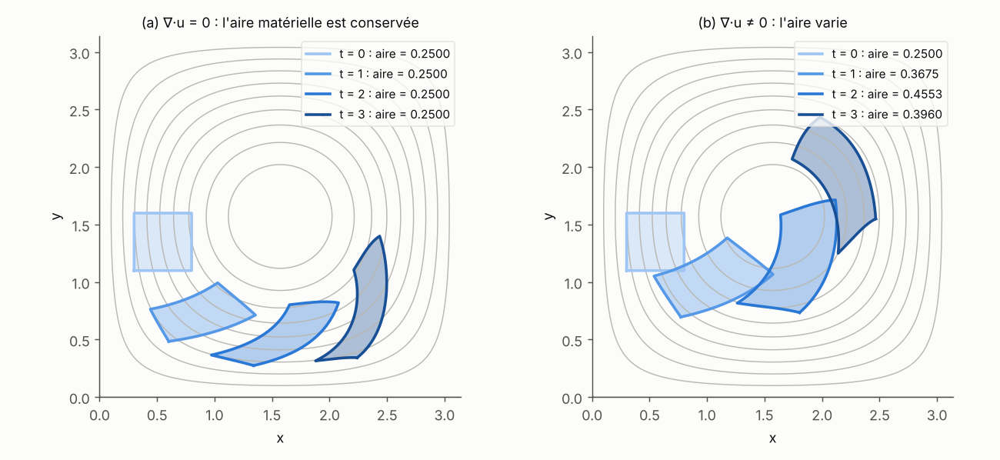

Mécanique des fluides et turbulence
Préparation · niveau L2 → M1 · ≈ 25 h
Objectifs
Ce module construit, à partir d’un niveau de deuxième année de licence, tout le vocabulaire de mécanique des fluides dont on a besoin pour lire un article sur les modèles génératifs de champs turbulents ou magnétohydrodynamiques. À la fin des quelque vingt-cinq heures de travail prévues, vous devriez être capable de :
- savoir passer de la description lagrangienne à la description eulérienne d’un écoulement, calculer une dérivée particulaire et démontrer l’équivalence entre \nabla\cdot\mathbf{u} = 0 et la conservation des volumes matériels ;
- savoir écrire et adimensionner les équations de Navier–Stokes incompressibles, expliquer pourquoi la pression est le multiplicateur de Lagrange de la contrainte \nabla\cdot\mathbf{u} = 0 et calculer la projection de Leray d’un champ périodique ;
- savoir établir l’équation de la vorticité en 2D et en 3D, identifier le terme d’étirement et reconstruire un champ de vitesse 2D à partir de sa fonction de courant ;
- savoir démontrer les bilans d’énergie, d’enstrophie (2D) et d’hélicité, et en déduire l’égalité « injection moyenne = dissipation moyenne » en régime statistiquement stationnaire ;
- savoir vérifier qu’un écoulement de référence (Poiseuille, Taylor–Green, Kolmogorov, ABC) est solution exacte, et décrire la géométrie de l’écoulement de von Kármán utilisé par l’expérience VKS ;
- savoir retrouver par analyse dimensionnelle le spectre de Kolmogorov E(k) \propto \varepsilon^{2/3} k^{-5/3}, l’échelle de Kolmogorov et le nombre de degrés de liberté \propto Re^{9/4}, et expliquer la double cascade de la turbulence 2D ;
- savoir programmer un solveur pseudo-spectral 2D vorticité–fonction de courant avec désaliasage et facteur intégrant, mesurer son spectre et vérifier numériquement le bilan d’énergie moyen.
Prérequis
Le point de départ est un niveau L2 de mathématiques : dérivées partielles, intégrales multiples et changement de variables, équations différentielles linéaires, séries de Fourier d’une fonction périodique. La mécanique du point (principe fondamental de la dynamique, énergie cinétique) de première année suffit côté physique.
Le module Calcul vectoriel et analyse de Fourier doit être lu avant celui-ci : on y utilise sans les redémontrer les formules d’analyse vectorielle (\nabla\times\nabla\times = \nabla\nabla\cdot - \Delta, théorème de la divergence), la transformée de Fourier discrète et l’égalité de Parseval. Les modules Systèmes dynamiques et Probabilités et transport optimal prolongent naturellement le chapitre 6 (mesures invariantes, ergodicité) ; ils ne sont pas nécessaires pour commencer.
Pour les codes, il faut Python 3 avec NumPy (et Matplotlib si l’on veut tracer). Chaque bloc s’exécute tel quel en moins de trente secondes sur un processeur ordinaire ; la sortie obtenue lors de la rédaction est recopiée en commentaire.
Plan de travail
Le niveau indique la difficulté : 1 = fondations, 2 = cœur du sujet, 3 = proche de la recherche. Il ne redescend jamais d’une séance à la suivante.
| Séance | Durée | Niveau | Contenu | Exercices |
|---|---|---|---|---|
| S1 | 3 h | 1 | Chapitre 1 : cinématique, dérivée particulaire, masse, incompressibilité | 1, 2 |
| S2 | 3,5 h | 1 | Chapitre 2 : Navier–Stokes, pression et projection de Leray, conditions aux limites, Reynolds | 3, 4, 5 |
| S3 | 3 h | 2 | Chapitre 3 : vorticité, étirement, fonction de courant | 6, 7 |
| S4 | 3,5 h | 2 | Chapitre 4 : bilans d’énergie, d’enstrophie et d’hélicité, spectre | 8, 9 |
| S5 | 3 h | 2 | Chapitre 5 : Poiseuille, Taylor–Green, Kolmogorov, ABC, von Kármán | 10, 11 |
| S6 | 4,5 h | 3 | Chapitre 6 : statistique, Kolmogorov 1941, turbulence 2D | 12, 13 |
| S7 | 4,5 h | 3 | Chapitre 7 : méthodes pseudo-spectrales, solveur 2D, bilan numérique | 14, 15 |
| Total | 25 h | 15 exercices |
Un conseil d’organisation : faites tourner chaque bloc de code au moment où vous lisez le chapitre correspondant, puis modifiez un paramètre (résolution, viscosité, amplitude) pour voir ce qui change. La séance S7 suppose que les séances S1 à S6 sont acquises, car le solveur réutilise toutes les identités démontrées auparavant.
Le module contient quatre figures statiques (trajectoires et conservation des aires, écoulements de référence, cascades, résultats du solveur) et trois schémas interactifs, qui fonctionnent directement dans le navigateur : l’advection d’une tache de fluide (chapitre 1), l’échelle de Kolmogorov et le coût d’une simulation directe (chapitre 6), le repliement de spectre et la règle des 2/3 (chapitre 7). Manipulez-les pendant la lecture : ils servent aussi de support aux exercices 1, 12 et 14.
1. Cinématique : décrire un fluide en mouvement
Un fluide est un milieu continu dont chaque « particule » se déplace ; on peut suivre ces particules (point de vue de Lagrange) ou regarder ce qui passe en un point fixe de l’espace (point de vue d’Euler). Les modèles génératifs du stage produisent des champs eulériens \mathbf{u}(\mathbf{x}) sur une grille, mais les lois de conservation se démontrent le plus naturellement en suivant les particules : il faut donc savoir passer de l’un à l’autre.
1.1 Deux descriptions d’un même mouvement
Définition 1.1 — Descriptions lagrangienne et eulérienne Soit \Omega \subset \mathbb{R}^d (d = 2 ou 3) le domaine occupé par le fluide. La description lagrangienne se donne l’application de flot \mathbf{X}(\mathbf{a}, t) : position à l’instant t de la particule qui occupait la position \mathbf{a} à l’instant 0. La description eulérienne se donne le champ de vitesse \mathbf{u}(\mathbf{x}, t) en chaque point fixe \mathbf{x}. Les deux sont reliées par l’équation des trajectoires \frac{\partial \mathbf{X}}{\partial t}(\mathbf{a}, t) = \mathbf{u}\big(\mathbf{X}(\mathbf{a}, t), t\big), \qquad \mathbf{X}(\mathbf{a}, 0) = \mathbf{a}.
Si \mathbf{u} est assez régulier (de classe C^1 en espace) et tangent au bord \partial\Omega lorsqu’il y en a un, le théorème de Cauchy–Lipschitz et la dérivabilité des solutions par rapport à la condition initiale garantissent que \mathbf{a} \mapsto \mathbf{X}(\mathbf{a}, t) est, pour chaque t, un difféomorphisme de \Omega sur lui-même. On appelle lignes de courant à l’instant t les courbes tangentes en chaque point à \mathbf{u}(\cdot, t) ; elles coïncident avec les trajectoires lorsque l’écoulement est stationnaire, mais pas en général.
Définition 1.2 — Dérivée particulaire Pour une grandeur eulérienne f(\mathbf{x}, t) (scalaire ou vectorielle), la dérivée particulaire est \frac{\mathrm{D} f}{\mathrm{D} t} = \frac{\partial f}{\partial t} + (\mathbf{u}\cdot\nabla) f, \qquad (\mathbf{u}\cdot\nabla) f = \sum_{j=1}^{d} u_j \frac{\partial f}{\partial x_j}. Le premier terme est la variation locale (en un point fixe), le second la variation due au transport par l’écoulement (on parle de terme d’advection).
Proposition 1.3 — Sens physique de la dérivée particulaire La dérivée particulaire est la dérivée en temps de f le long de la trajectoire d’une particule : \frac{\mathrm{d}}{\mathrm{d}t} f\big(\mathbf{X}(\mathbf{a}, t), t\big) = \frac{\mathrm{D} f}{\mathrm{D} t}\big(\mathbf{X}(\mathbf{a}, t), t\big). En particulier, l’accélération d’une particule de fluide vaut \mathrm{D}\mathbf{u}/\mathrm{D}t = \partial_t \mathbf{u} + (\mathbf{u}\cdot\nabla)\mathbf{u}.
Preuve. C’est la règle de dérivation des fonctions composées : \frac{\mathrm{d}}{\mathrm{d}t} f(\mathbf{X}, t) = \partial_t f + \sum_j \partial_{x_j} f \, \partial_t X_j, et \partial_t X_j = u_j(\mathbf{X}, t) par la définition 1.1. Pour l’accélération, on applique ce résultat à f = \mathbf{u}, puisque \partial_t^2 \mathbf{X} = \frac{\mathrm{d}}{\mathrm{d}t}\mathbf{u}(\mathbf{X}, t). ∎
Exemple 1.4 — Rotation solide Considérons \mathbf{u} = \Omega_0(-y, x) dans le plan (on note \Omega_0 la vitesse angulaire, pour ne pas la confondre avec le domaine \Omega). Les trajectoires sont des cercles parcourus à la vitesse angulaire \Omega_0. Le champ est stationnaire (\partial_t\mathbf{u} = 0), et pourtant les particules accélèrent : (\mathbf{u}\cdot\nabla)\mathbf{u} = \Omega_0(-y)\,\partial_x\big(\Omega_0(-y, x)\big) + \Omega_0 x\,\partial_y\big(\Omega_0(-y, x)\big) = -\Omega_0^2 (x, y). On retrouve l’accélération centripète de la mécanique du point, de norme \Omega_0^2 r et dirigée vers le centre. Le terme (\mathbf{u}\cdot\nabla)\mathbf{u} est quadratique en \mathbf{u} : c’est la seule non-linéarité des équations de Navier–Stokes, et l’origine de la turbulence.
1.2 Jacobien, transport de Reynolds et conservation de la masse
Notons F_{ij} = \partial X_i/\partial a_j la matrice jacobienne du flot et J = \det F son déterminant. Un petit volume \mathrm{d}\mathbf{a} autour de \mathbf{a} devient, à l’instant t, un volume J\,\mathrm{d}\mathbf{a}.
Théorème 1.5 — Formule d’Euler pour le jacobien Le long de chaque trajectoire, \frac{\partial J}{\partial t}(\mathbf{a}, t) = (\nabla\cdot\mathbf{u})\big(\mathbf{X}(\mathbf{a}, t), t\big)\, J(\mathbf{a}, t), \qquad J(\mathbf{a}, 0) = 1.
Preuve. En dérivant l’équation des trajectoires par rapport à a_j, on obtient \partial_t F = (\nabla\mathbf{u})\,F, où (\nabla\mathbf{u})_{ik} = \partial u_i/\partial x_k est évalué en \mathbf{X}. La formule de Jacobi pour la dérivée d’un déterminant donne \partial_t \det F = \det F \, \mathrm{tr}(F^{-1}\partial_t F) = \det F\, \mathrm{tr}(F^{-1}\nabla\mathbf{u}\,F) = \det F \,\mathrm{tr}(\nabla\mathbf{u}), et \mathrm{tr}(\nabla\mathbf{u}) = \nabla\cdot\mathbf{u}. Comme F(\mathbf{a}, 0) = I, on a J(\mathbf{a}, 0) = 1. ∎
Théorème 1.6 — Transport de Reynolds Soit V(t) = \mathbf{X}(V_0, t) un volume matériel (toujours formé des mêmes particules) et f une fonction régulière. Alors \frac{\mathrm{d}}{\mathrm{d}t}\int_{V(t)} f\,\mathrm{d}\mathbf{x} = \int_{V(t)} \left(\frac{\mathrm{D} f}{\mathrm{D} t} + f\,\nabla\cdot\mathbf{u}\right)\mathrm{d}\mathbf{x} = \int_{V(t)} \left(\frac{\partial f}{\partial t} + \nabla\cdot(f\mathbf{u})\right)\mathrm{d}\mathbf{x}.
Preuve. Par le changement de variables \mathbf{x} = \mathbf{X}(\mathbf{a}, t), l’intégrale vaut \int_{V_0} f(\mathbf{X}(\mathbf{a}, t), t)\, J(\mathbf{a}, t)\,\mathrm{d}\mathbf{a}, sur un domaine qui ne dépend plus du temps. On dérive sous l’intégrale : la proposition 1.3 donne la dérivée du premier facteur, le théorème 1.5 celle du second. On revient enfin aux variables \mathbf{x}. La seconde forme découle de \mathrm{D}f/\mathrm{D}t + f\nabla\cdot\mathbf{u} = \partial_t f + \mathbf{u}\cdot\nabla f + f\nabla\cdot\mathbf{u} = \partial_t f + \nabla\cdot(f\mathbf{u}). ∎
Théorème 1.7 — Conservation de la masse Si la masse de tout volume matériel est constante, la masse volumique \rho(\mathbf{x}, t) vérifie l’équation de continuité \frac{\partial \rho}{\partial t} + \nabla\cdot(\rho\,\mathbf{u}) = 0, \qquad \text{soit encore} \qquad \frac{\mathrm{D}\rho}{\mathrm{D}t} = -\rho\,\nabla\cdot\mathbf{u}.
Preuve. On applique le théorème 1.6 à f = \rho : 0 = \frac{\mathrm{d}}{\mathrm{d}t}\int_{V(t)}\rho\,\mathrm{d}\mathbf{x} = \int_{V(t)}(\partial_t\rho + \nabla\cdot(\rho\mathbf{u}))\,\mathrm{d}\mathbf{x} pour tout volume matériel. Une fonction continue dont l’intégrale est nulle sur toute boule est identiquement nulle, d’où le résultat. ∎
Définition 1.8 — Écoulement incompressible Un écoulement est incompressible si la masse volumique de chaque particule reste constante, \mathrm{D}\rho/\mathrm{D}t = 0. D’après le théorème 1.7, cela équivaut (pour \rho > 0) à \nabla\cdot\mathbf{u} = 0, et, d’après le théorème 1.5, à J \equiv 1 : le flot conserve les volumes (les aires en 2D). Un champ de divergence nulle est dit solénoïdal. Dans toute la suite, on suppose de plus \rho uniforme, et l’on prend \rho = 1.
Remarque 1.9 — Quand l’hypothèse est-elle raisonnable ? Un liquide n’est jamais rigoureusement incompressible, mais les ondes acoustiques s’y propagent à une vitesse c bien supérieure aux vitesses d’écoulement U (dans l’eau, c est de l’ordre de 1{,}5 km/s). L’analyse classique (voir Batchelor, 2000) montre que les variations relatives de masse volumique induites par l’écoulement sont d’ordre Ma^2, où Ma = U/c est le nombre de Mach. Pour U = 10 m/s dans l’eau, Ma^2 \approx 4\times 10^{-5} : la contrainte \nabla\cdot\mathbf{u} = 0 est alors une excellente approximation. C’est aussi le cas du sodium liquide des expériences de dynamo.
Exemple 1.10 — Vérification numérique sur un écoulement cellulaire Le code ci-dessous intègre les trajectoires de l’écoulement stationnaire \mathbf{u} = (\sin x\cos y, -\cos x\sin y), de divergence nulle. Il vérifie que le jacobien du flot reste égal à 1 (à l’erreur de différences finies près) et que l’accélération mesurée le long d’une trajectoire coïncide avec le terme eulérien (\mathbf{u}\cdot\nabla)\mathbf{u} = \tfrac12(\sin 2x, \sin 2y), calculé à la main.
import numpy as np
# Écoulement cellulaire stationnaire (Taylor–Green 2D) : u = (sin x cos y, -cos x sin y)
def u(p):
x, y = p[..., 0], p[..., 1]
return np.stack([np.sin(x) * np.cos(y), -np.cos(x) * np.sin(y)], axis=-1)
def flow_map(a, T, n=2000):
"""Intègre dX/dt = u(X), X(0) = a, par RK4 (description lagrangienne)."""
X, h = a.copy(), T / n
for _ in range(n):
k1 = u(X); k2 = u(X + h / 2 * k1); k3 = u(X + h / 2 * k2); k4 = u(X + h * k3)
X = X + h / 6 * (k1 + 2 * k2 + 2 * k3 + k4)
return X
# 1) Conservation des aires : J = det(∂X/∂a) doit rester égal à 1 (car ∇·u = 0)
rng = np.random.default_rng(1)
a = rng.uniform(0, 2 * np.pi, size=(5, 2))
d = 1e-6
for T in (1.0, 5.0):
Xa = flow_map(a, T)
Jx = (flow_map(a + [d, 0], T) - flow_map(a - [d, 0], T)) / (2 * d) # ∂X/∂a1
Jy = (flow_map(a + [0, d], T) - flow_map(a - [0, d], T)) / (2 * d) # ∂X/∂a2
J = Jx[:, 0] * Jy[:, 1] - Jx[:, 1] * Jy[:, 0]
print(f"T = {T} : max |det(∂X/∂a) - 1| = {np.abs(J - 1).max():.1e}")
# 2) Dérivée particulaire : l'accélération d²X/dt² le long d'une trajectoire
# coïncide avec Du/Dt = ∂t u + (u·∇)u = (u·∇)u (écoulement stationnaire)
p0 = np.array([[0.3, 1.1]])
h = 1e-3
Xm, X0, Xp = flow_map(p0, 1 - h, 400), flow_map(p0, 1.0, 400), flow_map(p0, 1 + h, 400)
acc_traj = (Xp - 2 * X0 + Xm) / h**2
x, y = X0[0]
acc_euler = np.array([0.5 * np.sin(2 * x), 0.5 * np.sin(2 * y)]) # (u·∇)u calculé à la main
print("d²X/dt² (trajectoire) =", np.round(acc_traj[0], 5))
print("(u·∇)u (eulérien) =", np.round(acc_euler, 5))
# sortie :
# T = 1.0 : max |det(∂X/∂a) - 1| = 8.9e-09
# T = 5.0 : max |det(∂X/∂a) - 1| = 1.6e-08
# d²X/dt² (trajectoire) = [0.46655 0.41195]
# (u·∇)u (eulérien) = [0.46655 0.41195]
Ce qu’il faut retenir — chapitre 1
- La description eulérienne \mathbf{u}(\mathbf{x}, t) et la description lagrangienne \mathbf{X}(\mathbf{a}, t) sont reliées par \partial_t\mathbf{X} = \mathbf{u}(\mathbf{X}, t).
- La dérivée particulaire \mathrm{D}/\mathrm{D}t = \partial_t + \mathbf{u}\cdot\nabla est la dérivée le long des trajectoires ; l’accélération \mathrm{D}\mathbf{u}/\mathrm{D}t contient le terme non linéaire (\mathbf{u}\cdot\nabla)\mathbf{u}.
- Le jacobien du flot obéit à \partial_t J = (\nabla\cdot\mathbf{u})J ; d’où le transport de Reynolds et l’équation de continuité \partial_t\rho + \nabla\cdot(\rho\mathbf{u}) = 0.
- Incompressibilité : \nabla\cdot\mathbf{u} = 0 \Leftrightarrow J \equiv 1 \Leftrightarrow les volumes matériels sont conservés.
2. Les équations de Navier–Stokes incompressibles
La cinématique dit comment le fluide se déplace ; la dynamique dit pourquoi. On écrit le principe fondamental de la dynamique pour chaque volume matériel, avec une loi de comportement qui relie les contraintes internes aux gradients de vitesse. Le résultat, les équations de Navier–Stokes, est le modèle que les données d’apprentissage du stage satisfont (en version magnétohydrodynamique, voir le module MHD et effet dynamo).
2.1 Bilan de quantité de mouvement
Définition 2.1 — Tenseur des contraintes d’un fluide newtonien La force exercée à travers un petit élément de surface de normale \mathbf{n} est \boldsymbol\sigma\,\mathbf{n}\,\mathrm{d}S, où \boldsymbol\sigma est le tenseur des contraintes (symétrique). Un fluide est newtonien et incompressible si \boldsymbol\sigma = -p\,I + 2\mu\,\mathbf{S}, \qquad S_{ij} = \frac12\left(\frac{\partial u_i}{\partial x_j} + \frac{\partial u_j}{\partial x_i}\right), où p est la pression, \mu la viscosité dynamique et \mathbf{S} le tenseur des taux de déformation. On note \nu = \mu/\rho la viscosité cinématique (en m²/s).
Théorème 2.2 — Équations de Navier–Stokes incompressibles Pour un fluide newtonien de masse volumique uniforme \rho = 1, soumis à une force volumique \mathbf{f} (par unité de masse), le champ de vitesse et la pression vérifient \frac{\partial\mathbf{u}}{\partial t} + (\mathbf{u}\cdot\nabla)\mathbf{u} = -\nabla p + \nu\,\Delta\mathbf{u} + \mathbf{f}, \qquad \nabla\cdot\mathbf{u} = 0.
Preuve. Esquisse. Pour un volume matériel V(t), la variation de quantité de mouvement égale la somme des forces : \frac{\mathrm{d}}{\mathrm{d}t}\int_{V}\rho\mathbf{u} = \int_{\partial V}\boldsymbol\sigma\mathbf{n}\,\mathrm{d}S + \int_V\rho\mathbf{f}. Le théorème 1.6 (appliqué composante par composante, avec la conservation de la masse) transforme le membre de gauche en \int_V \rho\,\mathrm{D}\mathbf{u}/\mathrm{D}t ; le théorème de la divergence transforme l’intégrale de surface en \int_V \nabla\cdot\boldsymbol\sigma. Le volume étant arbitraire, \rho\,\mathrm{D}\mathbf{u}/\mathrm{D}t = \nabla\cdot\boldsymbol\sigma + \rho\mathbf{f} (équation de Cauchy). Avec la loi newtonienne, (\nabla\cdot\boldsymbol\sigma)_i = -\partial_i p + \mu\sum_j\partial_j(\partial_j u_i + \partial_i u_j) = -\partial_i p + \mu\Delta u_i + \mu\,\partial_i(\nabla\cdot\mathbf{u}), et le dernier terme est nul. On divise enfin par \rho = 1. ∎
On compte d + 1 inconnues (\mathbf{u} et p) pour d + 1 équations. Mais la pression n’a pas d’équation d’évolution propre : elle n’apparaît que par son gradient, et elle est entièrement déterminée par la contrainte d’incompressibilité. C’est le point qui intéresse directement la génération de champs sous contrainte.
2.2 La pression, multiplicateur de Lagrange de la contrainte d’incompressibilité
Proposition 2.3 — Équation de Poisson pour la pression Si (\mathbf{u}, p) est solution régulière, alors à chaque instant -\Delta p = \nabla\cdot\big((\mathbf{u}\cdot\nabla)\mathbf{u}\big) - \nabla\cdot\mathbf{f} = \sum_{i,j}\frac{\partial u_j}{\partial x_i}\frac{\partial u_i}{\partial x_j} - \nabla\cdot\mathbf{f}.
Preuve. On prend la divergence de l’équation de quantité de mouvement. Les termes \partial_t(\nabla\cdot\mathbf{u}) et \nu\Delta(\nabla\cdot\mathbf{u}) sont nuls. Pour le terme non linéaire, \partial_i(u_j\partial_j u_i) = \partial_i u_j\,\partial_j u_i + u_j\partial_j(\partial_i u_i), et le second morceau est nul. ∎
La pression n’est donc pas une donnée indépendante : à \mathbf{u} fixé, elle est la solution d’un problème elliptique, instantané et non local. Une perturbation de vitesse en un point modifie la pression partout. Le théorème suivant donne l’interprétation géométrique de ce fait.
Théorème 2.4 — Projection de Leray ; la pression comme multiplicateur de Lagrange Sur le tore \mathbb{T}^d = [0, 2\pi)^d (domaine périodique), tout champ de carré intégrable \mathbf{v} se décompose de manière unique en \mathbf{v} = \mathbf{w} + \nabla q, \qquad \nabla\cdot\mathbf{w} = 0, (q étant défini à une constante près), et les deux termes sont orthogonaux dans L^2. L’application \mathbb{P}:\mathbf{v}\mapsto\mathbf{w} est la projection de Leray ; elle réalise le minimum de \tfrac12\|\mathbf{w} - \mathbf{v}\|^2 sous la contrainte \nabla\cdot\mathbf{w} = 0, et q est le multiplicateur de Lagrange associé. En Fourier, pour \mathbf{k}\neq 0, \widehat{\mathbb{P}\mathbf{v}}(\mathbf{k}) = \left(I - \frac{\mathbf{k}\mathbf{k}^{\mathsf T}}{|\mathbf{k}|^2}\right)\hat{\mathbf{v}}(\mathbf{k}), et \widehat{\mathbb{P}\mathbf{v}}(\mathbf{0}) = \hat{\mathbf{v}}(\mathbf{0}) : la moyenne de \mathbf{v}, qui est un champ constant donc solénoïdal, est entièrement conservée. Les équations de Navier–Stokes s’écrivent alors sans pression : \partial_t\mathbf{u} = \mathbb{P}\big[-(\mathbf{u}\cdot\nabla)\mathbf{u} + \nu\Delta\mathbf{u} + \mathbf{f}\big].
Preuve. Lagrangien. Introduisons \mathcal{L}(\mathbf{w}, q) = \tfrac12\|\mathbf{w} - \mathbf{v}\|^2 + \langle q, \nabla\cdot\mathbf{w}\rangle, où \langle\cdot,\cdot\rangle est le produit scalaire L^2. Par intégration par parties sur le tore (pas de bord), \langle q, \nabla\cdot\mathbf{w}\rangle = -\langle\nabla q, \mathbf{w}\rangle. La stationnarité en \mathbf{w} donne \mathbf{w} - \mathbf{v} - \nabla q = 0, donc \mathbf{v} = \mathbf{w} - \nabla q ; quitte à changer q en -q, c’est la décomposition annoncée. La stationnarité en q redonne la contrainte \nabla\cdot\mathbf{w} = 0. En prenant la divergence, q résout \Delta q = \nabla\cdot\mathbf{v}.
Fourier. Avec \hat{\mathbf{v}} = \hat{\mathbf{w}} + \mathrm{i}\mathbf{k}\hat q et \mathbf{k}\cdot\hat{\mathbf{w}} = 0, on trouve \mathrm{i}|\mathbf{k}|^2\hat q = \mathbf{k}\cdot\hat{\mathbf{v}}, d’où \hat{\mathbf{w}} = \hat{\mathbf{v}} - \mathbf{k}(\mathbf{k}\cdot\hat{\mathbf{v}})/|\mathbf{k}|^2. La matrice I - \mathbf{k}\mathbf{k}^{\mathsf T}/|\mathbf{k}|^2 est symétrique et idempotente : c’est un projecteur orthogonal, mode par mode, ce qui prouve l’unicité, l’orthogonalité (par Parseval) et la propriété de minimum (Pythagore).
Navier–Stokes. On applique \mathbb{P} à l’équation de quantité de mouvement : \mathbb{P}\partial_t\mathbf{u} = \partial_t\mathbf{u} car \mathbf{u} est solénoïdal, et \mathbb{P}\nabla p = 0. La pression est exactement la partie gradient qu’il faut retirer pour que l’évolution reste dans l’espace des champs solénoïdaux. ∎
Remarque 2.5 — Deux lectures de ce théorème Arnold (1966) a montré que les équations d’Euler (\nu = 0) décrivent les géodésiques du groupe des difféomorphismes qui conservent le volume : la pression est la force de contrainte qui maintient le mouvement sur ce groupe, exactement comme la tension d’un fil maintient un pendule sur son cercle. Côté numérique, Chorin (1968) a fondé la méthode de projection : on avance d’abord la vitesse sans contrainte, puis on la projette sur les champs solénoïdaux. La « projection finale » et le « flot projeté » comparés dans l’expérience E2 du rapport sont la transposition directe de cette idée aux modèles génératifs.
2.3 Conditions aux limites
Définition 2.6 — Conditions aux limites usuelles - Adhérence (paroi solide de vitesse \mathbf{U}_p) : \mathbf{u} = \mathbf{U}_p sur \partial\Omega. C’est la condition naturelle pour un fluide visqueux : le fluide colle à la paroi. - Imperméabilité seule : \mathbf{u}\cdot\mathbf{n} = 0 sur \partial\Omega. C’est la seule condition que l’on peut imposer pour un fluide parfait (\nu = 0), car l’équation d’Euler est d’ordre un en espace. - Périodicité : \Omega = [0, L)^d et tous les champs sont L-périodiques dans chaque direction. Il n’y a pas de bord ; c’est le cadre des méthodes spectrales (chapitre 7) et de la plupart des jeux de données d’apprentissage.
Proposition 2.7 — Vitesse moyenne en domaine périodique Sur le tore, la vitesse moyenne \langle\mathbf{u}\rangle vérifie \frac{\mathrm{d}}{\mathrm{d}t}\langle\mathbf{u}\rangle = \langle\mathbf{f}\rangle. Si la force est de moyenne nulle, on peut donc supposer \langle\mathbf{u}\rangle = 0 sans perte de généralité.
Preuve. On moyenne l’équation de quantité de mouvement. La moyenne d’une dérivée d’une fonction périodique est nulle, donc \langle\nabla p\rangle = 0 et \langle\Delta\mathbf{u}\rangle = 0 ; de plus (\mathbf{u}\cdot\nabla)\mathbf{u} = \nabla\cdot(\mathbf{u}\otimes\mathbf{u}) car \nabla\cdot\mathbf{u} = 0, et sa moyenne est nulle aussi. ∎
2.4 Adimensionnement et nombre de Reynolds
Définition 2.8 — Nombre de Reynolds Soient U une vitesse et L une longueur caractéristiques. On pose \mathbf{x} = L\mathbf{x}^*, \mathbf{u} = U\mathbf{u}^*, t = (L/U)t^*, p = U^2p^* et \mathbf{f} = (U^2/L)\mathbf{f}^*. Les équations deviennent, en omettant les étoiles, \frac{\partial\mathbf{u}}{\partial t} + (\mathbf{u}\cdot\nabla)\mathbf{u} = -\nabla p + \frac{1}{Re}\Delta\mathbf{u} + \mathbf{f}, \qquad \nabla\cdot\mathbf{u} = 0, \qquad Re = \frac{UL}{\nu}. Le nombre de Reynolds Re compare l’ordre de grandeur du terme d’inertie, U^2/L, à celui du terme visqueux, \nu U/L^2. C’est aussi le rapport entre le temps de diffusion visqueuse L^2/\nu et le temps d’advection L/U.
Proposition 2.9 — Similitude dynamique Deux écoulements dans des géométries semblables, avec des forçages et des conditions aux limites semblables, ont des solutions adimensionnées identiques dès qu’ils ont le même nombre de Reynolds.
Preuve. Après adimensionnement, le problème complet (équations, domaine, conditions aux limites, forçage) ne dépend plus que de Re ; deux problèmes de même Re sont donc le même problème mathématique. ∎
C’est cette propriété qui justifie les maquettes en soufflerie, et c’est elle qui fait de Re (avec Rm et Pm pour la MHD) le paramètre de conditionnement naturel \boldsymbol\lambda des modèles génératifs du stage : générer « un champ à Re donné » a un sens indépendant des unités choisies. Attention cependant : la définition précise de U et L est une convention, et deux articles peuvent annoncer le même écoulement avec des Re différents (on le verra au chapitre 5 avec l’écoulement de Kolmogorov).
Exemple 2.10 — Ordres de grandeur Avec \nu \approx 10^{-6} m²/s pour l’eau : l’écoulement lent de l’eau dans un tube capillaire (U = 1 mm/s, L = 1 mm) donne Re \approx 1 ; une rivière (U = 1 m/s, L = 10 m) donne Re \approx 10^7. Dans l’expérience VKS de dynamo au sodium liquide, Monchaux et al. (2007) définissent Re = KR^2\Omega/\nu (avec R le rayon de la cuve, \Omega la vitesse angulaire des turbines et un coefficient d’efficacité K = 0{,}6) et indiquent que Re peut atteindre 5\times 10^6, le nombre de Reynolds magnétique pouvant alors atteindre 49 (sodium à 120 °C). L’écoulement y est pleinement turbulent.
Exemple 2.11 — Projection de Leray et pression de Taylor–Green, numériquement Le code suivant projette un champ aléatoire lisse sur les champs solénoïdaux, vérifie que la projection est idempotente, orthogonale et qu’elle donne le champ solénoïdal le plus proche ; puis il résout l’équation de Poisson (proposition 2.3) pour le tourbillon de Taylor–Green et compare à la pression exacte p = \tfrac14(\cos 2x + \cos 2y) (exercice 5). On annule le mode de Nyquist k = -N/2, pour lequel la dérivée spectrale n’est pas définie de façon réelle (chapitre 7).
import numpy as np
N = 32
x = np.arange(N) * 2 * np.pi / N
X, Y = np.meshgrid(x, x, indexing="xy")
k = np.fft.fftfreq(N, 1.0 / N)
KX, KY = np.meshgrid(k, k)
K2 = KX**2 + KY**2
K2s = np.where(K2 > 0, K2, 1.0)
def div(vx, vy):
return np.real(np.fft.ifft2(1j * KX * np.fft.fft2(vx) + 1j * KY * np.fft.fft2(vy)))
def leray(vx, vy):
"""P v = v - ∇p avec Δp = ∇·v : en Fourier, P̂(k) = I - k kᵀ/|k|²."""
fx, fy = np.fft.fft2(vx), np.fft.fft2(vy)
kv = (KX * fx + KY * fy) / K2s
return np.real(np.fft.ifft2(fx - KX * kv)), np.real(np.fft.ifft2(fy - KY * kv))
# 1) Projection d'un champ aléatoire lisse
rng = np.random.default_rng(0)
filt = np.exp(-K2 / 20) * (np.abs(KX) < N // 2) * (np.abs(KY) < N // 2) # mode de Nyquist annulé
vx = np.real(np.fft.ifft2(np.fft.fft2(rng.standard_normal((N, N))) * filt))
vy = np.real(np.fft.ifft2(np.fft.fft2(rng.standard_normal((N, N))) * filt))
wx, wy = leray(vx, vy)
wx2, wy2 = leray(wx, wy)
ip = lambda ax, ay, bx, by: np.mean(ax * bx + ay * by) # produit scalaire L² normalisé
print(f"max|∇·v| = {np.abs(div(vx, vy)).max():.2e} max|∇·Pv| = {np.abs(div(wx, wy)).max():.1e}")
print(f"idempotence max|P²v - Pv| = {max(np.abs(wx2 - wx).max(), np.abs(wy2 - wy).max()):.1e}")
print(f"orthogonalité <Pv, v - Pv> = {ip(wx, wy, vx - wx, vy - wy):.1e}")
# Pv est le champ solénoïdal le plus proche de v : on compare à d'autres champs solénoïdaux
dist = ip(vx - wx, vy - wy, vx - wx, vy - wy)
zx, zy = leray(*[np.real(np.fft.ifft2(np.fft.fft2(rng.standard_normal((N, N))) * filt)) for _ in range(2)])
print(f"||v-Pv||² = {dist:.4f} < ||v-(Pv+z)||² = {ip(vx-wx-zx, vy-wy-zy, vx-wx-zx, vy-wy-zy):.4f}")
# 2) Pression du tourbillon de Taylor–Green : -Δp = ∂i u_j ∂j u_i, comparée à (cos 2x + cos 2y)/4
ux, uy = np.sin(X) * np.cos(Y), -np.cos(X) * np.sin(Y)
d = lambda f, K: np.real(np.fft.ifft2(1j * K * np.fft.fft2(f)))
src = d(ux, KX)**2 + 2 * d(uy, KX) * d(ux, KY) + d(uy, KY)**2
p = np.real(np.fft.ifft2(np.fft.fft2(src) / K2s * (K2 > 0)))
p_exact = 0.25 * (np.cos(2 * X) + np.cos(2 * Y))
print(f"max|p - p_exact| = {np.abs(p - p_exact).max():.1e}")
# sortie :
# max|∇·v| = 2.07e+00 max|∇·Pv| = 8.7e-16
# idempotence max|P²v - Pv| = 1.1e-16
# orthogonalité <Pv, v - Pv> = -1.4e-18
# ||v-Pv||² = 0.0360 < ||v-(Pv+z)||² = 0.0772
# max|p - p_exact| = 3.3e-16Ce qu’il faut retenir — chapitre 2
- Navier–Stokes incompressible : \partial_t\mathbf{u} + (\mathbf{u}\cdot\nabla)\mathbf{u} = -\nabla p + \nu\Delta\mathbf{u} + \mathbf{f}, \nabla\cdot\mathbf{u} = 0.
- La pression n’a pas d’équation d’évolution : elle résout -\Delta p = \partial_i u_j\partial_j u_i - \nabla\cdot\mathbf{f} et joue le rôle de multiplicateur de Lagrange de la contrainte \nabla\cdot\mathbf{u} = 0.
- Projection de Leray en Fourier : \hat{\mathbf{w}} = (I - \mathbf{k}\mathbf{k}^{\mathsf T}/|\mathbf{k}|^2)\hat{\mathbf{v}} ; c’est le champ solénoïdal le plus proche de \mathbf{v} au sens L^2.
- Conditions aux limites : adhérence (visqueux), imperméabilité (parfait), périodicité (tore, méthodes spectrales).
- Re = UL/\nu = inertie / viscosité ; deux écoulements semblables de même Re sont identiques après adimensionnement.
3. Vorticité et fonction de courant
La pression rend l’équation de Navier–Stokes non locale. En prenant le rotationnel, on l’élimine, et l’on obtient une équation d’évolution pour la vorticité, qui mesure la rotation locale du fluide. En 2D, cette équation devient une simple équation de transport–diffusion d’un scalaire ; c’est la forme utilisée par le solveur du chapitre 7 et par la plupart des jeux de données 2D (écoulement de Kolmogorov).
3.1 Définitions et forme de Lamb
Définition 3.1 — Vorticité La vorticité est le rotationnel de la vitesse, \boldsymbol\omega = \nabla\times\mathbf{u}. Pour un écoulement plan \mathbf{u} = (u_x(x, y), u_y(x, y), 0), elle est portée par \mathbf{e}_z et l’on note \omega = \partial_x u_y - \partial_y u_x sa composante scalaire. Un champ est irrotationnel si \boldsymbol\omega = 0. Par construction, \nabla\cdot\boldsymbol\omega = 0.
Exemple 3.2 — Rotation solide et cisaillement Pour la rotation solide \mathbf{u} = \Omega_0(-y, x) de l’exemple 1.4, on trouve \omega = 2\Omega_0 : la vorticité vaut deux fois la vitesse angulaire locale. Pour le cisaillement simple \mathbf{u} = (\gamma y, 0), on trouve \omega = -\gamma, alors que les trajectoires sont des droites : la vorticité mesure la rotation d’un petit élément de fluide sur lui-même, pas la courbure des trajectoires.
Proposition 3.3 — Forme de Lamb du terme non linéaire Pour tout champ régulier \mathbf{u} en 3D, (\mathbf{u}\cdot\nabla)\mathbf{u} = \nabla\left(\frac{|\mathbf{u}|^2}{2}\right) - \mathbf{u}\times\boldsymbol\omega.
Preuve. En notation indicielle, avec le symbole de Levi-Civita, (\mathbf{u}\times\boldsymbol\omega)_i = \epsilon_{ijk}u_j\epsilon_{klm}\partial_l u_m. L’identité \epsilon_{ijk}\epsilon_{klm} = \delta_{il}\delta_{jm} - \delta_{im}\delta_{jl} donne (\mathbf{u}\times\boldsymbol\omega)_i = u_j\partial_i u_j - u_j\partial_j u_i = \partial_i(|\mathbf{u}|^2/2) - (\mathbf{u}\cdot\nabla)u_i. ∎
3.2 Équation de la vorticité : l’étirement
Théorème 3.4 — Équation de la vorticité en 3D Si \mathbf{u} est solution des équations de Navier–Stokes incompressibles, alors \frac{\partial\boldsymbol\omega}{\partial t} + (\mathbf{u}\cdot\nabla)\boldsymbol\omega = (\boldsymbol\omega\cdot\nabla)\mathbf{u} + \nu\Delta\boldsymbol\omega + \nabla\times\mathbf{f}.
Preuve. Avec la proposition 3.3, l’équation de quantité de mouvement s’écrit \partial_t\mathbf{u} - \mathbf{u}\times\boldsymbol\omega = -\nabla(p + |\mathbf{u}|^2/2) + \nu\Delta\mathbf{u} + \mathbf{f}. On prend le rotationnel : le gradient disparaît, et l’identité \nabla\times(\mathbf{u}\times\boldsymbol\omega) = (\boldsymbol\omega\cdot\nabla)\mathbf{u} - (\mathbf{u}\cdot\nabla)\boldsymbol\omega + \mathbf{u}(\nabla\cdot\boldsymbol\omega) - \boldsymbol\omega(\nabla\cdot\mathbf{u}), où les deux divergences sont nulles, donne le résultat. Le rotationnel commute avec \Delta et \partial_t. ∎
Le terme (\boldsymbol\omega\cdot\nabla)\mathbf{u} est le terme d’étirement des tourbillons. Il n’a pas d’équivalent en 2D et il est au cœur de la turbulence tridimensionnelle : un tube de vorticité étiré par l’écoulement s’amincit et tourne plus vite, comme une patineuse qui ramène ses bras.
Proposition 3.5 — Seul le taux de déformation étire On a (\boldsymbol\omega\cdot\nabla)\mathbf{u} = \mathbf{S}\boldsymbol\omega, où \mathbf{S} est le tenseur des taux de déformation. Par conséquent, pour \nu = 0 et \mathbf{f} = 0, \frac{\mathrm{D}}{\mathrm{D}t}\left(\frac{|\boldsymbol\omega|^2}{2}\right) = \boldsymbol\omega\cdot\mathbf{S}\boldsymbol\omega, qui est positif lorsque \boldsymbol\omega est alignée avec une direction propre de \mathbf{S} de valeur propre positive (direction d’étirement).
Preuve. On décompose \nabla\mathbf{u} = \mathbf{S} + \mathbf{A} en parties symétrique et antisymétrique. La partie antisymétrique agit comme \mathbf{A}\mathbf{v} = \tfrac12\boldsymbol\omega\times\mathbf{v} ; donc \mathbf{A}\boldsymbol\omega = \tfrac12\boldsymbol\omega\times\boldsymbol\omega = 0 et (\boldsymbol\omega\cdot\nabla)\mathbf{u} = (\nabla\mathbf{u})\boldsymbol\omega = \mathbf{S}\boldsymbol\omega. On fait ensuite le produit scalaire de l’équation de la vorticité avec \boldsymbol\omega. ∎
Théorème 3.6 — Vorticité en 2D Pour un écoulement plan, (\boldsymbol\omega\cdot\nabla)\mathbf{u} = 0 et la vorticité scalaire obéit à \frac{\partial\omega}{\partial t} + \mathbf{u}\cdot\nabla\omega = \nu\Delta\omega + (\nabla\times\mathbf{f})_z. En l’absence de viscosité et de forçage, \omega est simplement transportée par l’écoulement : pour toute fonction G de classe C^1, la quantité \langle G(\omega)\rangle est conservée sur le tore.
Preuve. \boldsymbol\omega = \omega\mathbf{e}_z et \mathbf{u} ne dépend pas de z, donc (\boldsymbol\omega\cdot\nabla)\mathbf{u} = \omega\,\partial_z\mathbf{u} = 0. Pour la conservation, \frac{\mathrm{d}}{\mathrm{d}t}\langle G(\omega)\rangle = -\langle G'(\omega)\,\mathbf{u}\cdot\nabla\omega\rangle = -\langle\mathbf{u}\cdot\nabla G(\omega)\rangle = \langle(\nabla\cdot\mathbf{u})G(\omega)\rangle = 0, par intégration par parties sur le tore. ∎
En 2D, il existe donc une infinité de quantités conservées par la dynamique idéale, dont l’enstrophie \tfrac12\langle\omega^2\rangle (G(\omega) = \omega^2/2). C’est la raison profonde de la différence entre turbulence 2D et 3D (chapitre 6).
3.3 Fonction de courant
Définition 3.7 — Fonction de courant Pour un écoulement plan, on appelle fonction de courant une fonction \psi(x, y, t) telle que \mathbf{u} = \nabla^\perp\psi = \left(\frac{\partial\psi}{\partial y}, -\frac{\partial\psi}{\partial x}\right). C’est la convention du site (voir les notations communes). Un tel champ est automatiquement solénoïdal : \nabla\cdot\nabla^\perp\psi = \partial_x\partial_y\psi - \partial_y\partial_x\psi = 0.
Proposition 3.8 — Propriétés de la fonction de courant (i) Les lignes de courant sont les lignes de niveau de \psi. (ii) La vorticité vaut \omega = -\Delta\psi. (iii) Sur le tore \mathbb{T}^2, tout champ solénoïdal de moyenne nulle s’écrit \mathbf{u} = \nabla^\perp\psi pour un unique \psi de moyenne nulle, donné en Fourier par \hat\psi(\mathbf{k}) = \frac{\hat\omega(\mathbf{k})}{|\mathbf{k}|^2}, \qquad \mathbf{k}\neq 0.
Preuve.
- \mathbf{u}\cdot\nabla\psi = \partial_y\psi\,\partial_x\psi - \partial_x\psi\,\partial_y\psi = 0 : \psi est constante le long de \mathbf{u}. (ii) \omega = \partial_x u_y - \partial_y u_x = -\partial_x^2\psi - \partial_y^2\psi. (iii) En Fourier, \mathbf{k}\cdot\hat{\mathbf{u}} = 0 impose \hat{\mathbf{u}}(\mathbf{k}) colinéaire à (k_y, -k_x) : \hat{\mathbf{u}} = \mathrm{i}(k_y, -k_x)\hat\psi pour un unique \hat\psi(\mathbf{k}), ce qui est exactement \mathbf{u} = \nabla^\perp\psi. La relation \omega = -\Delta\psi devient \hat\omega = |\mathbf{k}|^2\hat\psi. ∎
Le point (iii) est la version 2D d’un fait qui servira tout au long du stage : paramétrer un champ par un potentiel garantit la contrainte de divergence par construction. C’est le mécanisme « potentiels » de l’expérience E2 du rapport, et celui de FunDiff (Wang et al., 2026), dont le décodeur produit une fonction de courant pour l’écoulement de Kolmogorov. En 3D, le rôle de \psi est tenu par un potentiel vecteur \mathbf{A}, avec \mathbf{u} = \nabla\times\mathbf{A}.
Exemple 3.9 — Tourbillons de Taylor–Green 2D Prenons \psi = \sin x\sin y sur [0, 2\pi)^2. Alors \mathbf{u} = (\sin x\cos y, -\cos x\sin y) et \omega = -\Delta\psi = 2\sin x\sin y = 2\psi. Le domaine est pavé de quatre cellules tourbillonnaires de signes alternés. Comme \omega est une fonction de \psi, le terme d’advection \mathbf{u}\cdot\nabla\omega = 2\,\mathbf{u}\cdot\nabla\psi est nul : ce champ est une solution stationnaire des équations d’Euler 2D.
Théorème 3.10 — Théorème de Kelvin Pour un fluide parfait (\nu = 0) soumis à une force qui dérive d’un potentiel, la circulation \Gamma(t) = \oint_{C(t)}\mathbf{u}\cdot\mathrm{d}\boldsymbol\ell le long de toute courbe matérielle fermée C(t) est constante.
Preuve. Esquisse. On paramètre C(t) = \mathbf{X}(\mathbf{a}(s), t), s \in [0, 1]. Alors \frac{\mathrm{d}\Gamma}{\mathrm{d}t} = \oint \frac{\mathrm{D}\mathbf{u}}{\mathrm{D}t}\cdot\mathrm{d}\boldsymbol\ell + \oint\mathbf{u}\cdot\mathrm{d}\mathbf{u}. Le premier terme est l’intégrale d’un gradient le long d’une courbe fermée, donc nul ; le second vaut \oint\mathrm{d}(|\mathbf{u}|^2/2) = 0. ∎
Par le théorème de Stokes, \Gamma est le flux de vorticité à travers la surface bordée par C : en fluide parfait, les lignes de vorticité sont « gelées » dans l’écoulement. Le module MHD et effet dynamo montrera que les lignes de champ magnétique obéissent à une loi exactement analogue (théorème d’Alfvén), ce qui explique pourquoi l’étirement des tourbillons et l’amplification du champ magnétique par effet dynamo se ressemblent tant.
Exemple 3.11 — Vorticité et étirement, numériquement Le code ci-dessous vérifie \omega = -\Delta\psi = 2\psi et \mathbf{u}\cdot\nabla\omega = 0 pour Taylor–Green 2D, reconstruit \psi à partir de \omega par la formule spectrale, puis calcule le terme d’étirement pour la condition initiale de Taylor–Green 3D, \mathbf{u} = (\sin x\cos y\cos z, -\cos x\sin y\cos z, 0). En 3D, l’étirement local n’est pas nul ; sa moyenne \langle\boldsymbol\omega\cdot\mathbf{S}\boldsymbol\omega\rangle est nulle à t = 0 par symétrie, mais elle devient positive ensuite, et l’enstrophie croît (Brachet et al., 1983).
import numpy as np
N = 32
x = np.arange(N) * 2 * np.pi / N
k = np.fft.fftfreq(N, 1.0 / N)
# ---------- 2D : fonction de courant, vorticité, terme non linéaire ----------
X, Y = np.meshgrid(x, x, indexing="xy")
KX, KY = np.meshgrid(k, k)
K2 = KX**2 + KY**2
dx = lambda f: np.real(np.fft.ifft2(1j * KX * np.fft.fft2(f)))
dy = lambda f: np.real(np.fft.ifft2(1j * KY * np.fft.fft2(f)))
psi = np.sin(X) * np.sin(Y) # Taylor–Green 2D
ux, uy = dy(psi), -dx(psi) # u = ∇⊥ψ = (∂yψ, -∂xψ)
w = dx(uy) - dy(ux) # ω = ∂x u_y - ∂y u_x
lap_psi = np.real(np.fft.ifft2(-K2 * np.fft.fft2(psi)))
print(f"max|ω + Δψ| = {np.abs(w + lap_psi).max():.1e} max|ω - 2ψ| = {np.abs(w - 2*psi).max():.1e}")
print(f"max|u·∇ω| (Taylor–Green 2D) = {np.abs(ux*dx(w) + uy*dy(w)).max():.1e}")
print(f"max|u·∇ψ| (lignes de courant = isolignes de ψ) = {np.abs(ux*dx(psi) + uy*dy(psi)).max():.1e}")
# Champ 2D quelconque : on retrouve ψ à partir de ω par ψ̂ = ω̂/|k|²
rng = np.random.default_rng(2)
psi_r = np.real(np.fft.ifft2(np.fft.fft2(rng.standard_normal((N, N))) * np.exp(-K2 / 10)))
psi_r -= psi_r.mean()
w_r = np.real(np.fft.ifft2(K2 * np.fft.fft2(psi_r))) # ω = -Δψ
psi_back = np.real(np.fft.ifft2(np.fft.fft2(w_r) / np.where(K2 > 0, K2, 1) * (K2 > 0)))
print(f"inversion ω → ψ : max|ψ - ψ_reconstruit| = {np.abs(psi_r - psi_back).max():.1e}")
# ---------- 3D : terme d'étirement (ω·∇)u pour Taylor–Green 3D ----------
X3, Y3, Z3 = np.meshgrid(x, x, x, indexing="ij")
K = np.meshgrid(k, k, k, indexing="ij")
D = lambda f, i: np.real(np.fft.ifftn(1j * K[i] * np.fft.fftn(f)))
u3 = [np.sin(X3) * np.cos(Y3) * np.cos(Z3), -np.cos(X3) * np.sin(Y3) * np.cos(Z3), 0 * X3]
w3 = [D(u3[2], 1) - D(u3[1], 2), D(u3[0], 2) - D(u3[2], 0), D(u3[1], 0) - D(u3[0], 1)]
stretch = [sum(w3[j] * D(u3[i], j) for j in range(3)) for i in range(3)]
rms = lambda f: np.sqrt(np.mean(sum(c**2 for c in f)))
print(f"Taylor–Green 3D : rms(ω) = {rms(w3):.4f}, rms((ω·∇)u) = {rms(stretch):.4f}")
print(f"production d'enstrophie <ω·(ω·∇)u> = {np.mean(sum(w3[i]*stretch[i] for i in range(3))):.2e} à t = 0")
# sortie :
# max|ω + Δψ| = 9.3e-15 max|ω - 2ψ| = 6.7e-14
# max|u·∇ω| (Taylor–Green 2D) = 3.6e-13
# max|u·∇ψ| (lignes de courant = isolignes de ψ) = 0.0e+00
# inversion ω → ψ : max|ψ - ψ_reconstruit| = 1.1e-16
# Taylor–Green 3D : rms(ω) = 0.8660, rms((ω·∇)u) = 0.1768
# production d'enstrophie <ω·(ω·∇)u> = 1.80e-20 à t = 0Ce qu’il faut retenir — chapitre 3
- \boldsymbol\omega = \nabla\times\mathbf{u} ; forme de Lamb : (\mathbf{u}\cdot\nabla)\mathbf{u} = \nabla(|\mathbf{u}|^2/2) - \mathbf{u}\times\boldsymbol\omega.
- 3D : \partial_t\boldsymbol\omega + (\mathbf{u}\cdot\nabla)\boldsymbol\omega = (\boldsymbol\omega\cdot\nabla)\mathbf{u} + \nu\Delta\boldsymbol\omega + \nabla\times\mathbf{f} ; l’étirement (\boldsymbol\omega\cdot\nabla)\mathbf{u} = \mathbf{S}\boldsymbol\omega amplifie la vorticité.
- 2D : pas d’étirement, \omega est transportée et diffusée ; toutes les quantités \langle G(\omega)\rangle sont conservées par la dynamique idéale.
- Fonction de courant : \mathbf{u} = \nabla^\perp\psi = (\partial_y\psi, -\partial_x\psi), \omega = -\Delta\psi, \hat\psi = \hat\omega/|\mathbf{k}|^2 ; la divergence nulle est garantie par construction.
- Kelvin : en fluide parfait, la circulation le long d’une courbe matérielle est conservée.
4. Bilans : énergie, enstrophie, hélicité
Un champ turbulent est imprévisible en détail, mais certaines quantités globales obéissent à des bilans exacts. Ces bilans sont les premières « contraintes physiques » qu’un champ généré doit respecter, soit instantané par instantané (divergence), soit en moyenne (énergie). On se place sur le tore \mathbb{T}^d, avec la moyenne spatiale \langle f\rangle = |\Omega|^{-1}\int_\Omega f\,\mathrm{d}\mathbf{x}.
Définition 4.1 — Grandeurs quadratiques On appelle
E = \frac12\langle|\mathbf{u}|^2\rangle, \qquad H_K = \langle\mathbf{u}\cdot\boldsymbol\omega\rangle, \qquad P = \langle\mathbf{f}\cdot\mathbf{u}\rangle, \qquad \varepsilon = \nu\langle|\boldsymbol\omega|^2\rangle
l’énergie cinétique (par unité de masse), l’hélicité cinétique, la puissance injectée par le forçage et le taux de dissipation visqueuse. En 2D, on appelle enstrophie la quantité Z = \tfrac12\langle\omega^2\rangle (certains auteurs omettent le facteur \tfrac12 ; c’est le cas du code experiences/mhd2d.py du dépôt, où « enstrophie » désigne \langle\omega^2\rangle).
Lemme 4.2 — Gradient et vorticité Pour un champ solénoïdal périodique, \langle|\nabla\mathbf{u}|^2\rangle = \langle|\boldsymbol\omega|^2\rangle, où |\nabla\mathbf{u}|^2 = \sum_{i,j}(\partial_j u_i)^2.
Preuve. L’identité \epsilon_{kij}\epsilon_{klm} = \delta_{il}\delta_{jm} - \delta_{im}\delta_{jl} donne, point par point, |\boldsymbol\omega|^2 = |\nabla\mathbf{u}|^2 - \partial_j u_i\,\partial_i u_j. Or, par une intégration par parties en x_j, \langle\partial_j u_i\,\partial_i u_j\rangle = -\langle u_i\,\partial_j\partial_i u_j\rangle = -\langle u_i\,\partial_i(\nabla\cdot\mathbf{u})\rangle = 0. ∎
Théorème 4.3 — Bilan d’énergie Pour toute solution régulière des équations de Navier–Stokes sur le tore, \frac{\mathrm{d}E}{\mathrm{d}t} = P - \varepsilon = \langle\mathbf{f}\cdot\mathbf{u}\rangle - \nu\langle|\boldsymbol\omega|^2\rangle.
Preuve. On fait le produit scalaire de l’équation de quantité de mouvement avec \mathbf{u} et l’on moyenne.
- Terme non linéaire : \langle\mathbf{u}\cdot(\mathbf{u}\cdot\nabla)\mathbf{u}\rangle = \langle\mathbf{u}\cdot\nabla(|\mathbf{u}|^2/2)\rangle = -\langle(\nabla\cdot\mathbf{u})|\mathbf{u}|^2/2\rangle = 0. Le transport ne crée ni ne détruit d’énergie : il la redistribue.
- Pression : \langle\mathbf{u}\cdot\nabla p\rangle = -\langle p\,\nabla\cdot\mathbf{u}\rangle = 0. La pression ne travaille pas.
- Viscosité : \nu\langle\mathbf{u}\cdot\Delta\mathbf{u}\rangle = -\nu\langle|\nabla\mathbf{u}|^2\rangle = -\nu\langle|\boldsymbol\omega|^2\rangle par le lemme 4.2.
Il reste \frac{\mathrm{d}}{\mathrm{d}t}\tfrac12\langle|\mathbf{u}|^2\rangle = \langle\mathbf{f}\cdot\mathbf{u}\rangle - \nu\langle|\boldsymbol\omega|^2\rangle. ∎
Corollaire 4.4 — Injection moyenne = dissipation moyenne Si l’énergie reste bornée au cours du temps (ce qui est le cas d’un écoulement forcé en régime statistiquement stationnaire), les moyennes temporelles \overline{g} = \lim_{T\to\infty}\frac1T\int_0^T g(t)\,\mathrm{d}t, lorsqu’elles existent, vérifient \overline{P} = \overline{\varepsilon}.
Preuve. On intègre le théorème 4.3 entre 0 et T : \frac1T\int_0^T(P - \varepsilon)\,\mathrm{d}t = \frac{E(T) - E(0)}{T}, qui tend vers 0 puisque E est bornée. ∎
À retenir Le bilan \overline{P} = \overline{\varepsilon} ne dit rien d’un instantané isolé : à un instant donné, P et \varepsilon diffèrent (figure du chapitre 7). C’est une contrainte sur la loi des instantanés, pas sur chaque instantané : \mathbb{E}_{\mu_{\boldsymbol\lambda}}\big[\langle\mathbf{f}\cdot\mathbf{u}\rangle - \nu\langle|\boldsymbol\omega|^2\rangle\big] = 0, où \mu_{\boldsymbol\lambda} est la loi stationnaire de l’écoulement (chapitre 6). C’est exactement la forme de la contrainte « en loi » étudiée dans l’expérience E2 du rapport.
Théorème 4.5 — Bilan d’enstrophie en 2D En 2D, avec f_\omega = (\nabla\times\mathbf{f})_z, \frac{\mathrm{d}Z}{\mathrm{d}t} = \langle\omega f_\omega\rangle - \nu\langle|\nabla\omega|^2\rangle.
Preuve. On multiplie l’équation du théorème 3.6 par \omega et l’on moyenne. Le terme d’advection donne \langle\omega\,\mathbf{u}\cdot\nabla\omega\rangle = \langle\mathbf{u}\cdot\nabla(\omega^2/2)\rangle = 0 (même argument que pour l’énergie), et \nu\langle\omega\Delta\omega\rangle = -\nu\langle|\nabla\omega|^2\rangle. ∎
Corollaire 4.6 — Pas d’anomalie dissipative en 2D En 2D, sans forçage, l’enstrophie décroît et le taux de dissipation d’énergie vérifie \varepsilon(t) = 2\nu Z(t) \le 2\nu Z(0). À condition initiale fixée, \varepsilon \to 0 quand \nu \to 0.
Preuve. Sans forçage, le théorème 4.5 donne \mathrm{d}Z/\mathrm{d}t = -\nu\langle|\nabla\omega|^2\rangle \le 0. En 2D, \varepsilon = \nu\langle\omega^2\rangle = 2\nu Z \le 2\nu Z(0). ∎
Ce corollaire, simple à démontrer, a une conséquence profonde : en 2D, l’énergie ne peut pas être dissipée aux petites échelles quand la viscosité tend vers zéro. Elle doit aller ailleurs, vers les grandes échelles (cascade inverse, chapitre 6). En 3D au contraire, l’étirement fait croître \langle|\boldsymbol\omega|^2\rangle et l’on observe que \varepsilon reste fini quand \nu\to 0 : c’est l’anomalie dissipative.
Théorème 4.7 — Bilan d’hélicité En 3D sur le tore, \frac{\mathrm{d}H_K}{\mathrm{d}t} = 2\langle\boldsymbol\omega\cdot\mathbf{f}\rangle - 2\nu\langle\boldsymbol\omega\cdot(\nabla\times\boldsymbol\omega)\rangle. En particulier, l’hélicité est conservée par les équations d’Euler non forcées.
Preuve. Sur le tore, \langle\mathbf{a}\cdot(\nabla\times\mathbf{b})\rangle = \langle(\nabla\times\mathbf{a})\cdot\mathbf{b}\rangle (intégration par parties). Donc \frac{\mathrm{d}}{\mathrm{d}t}\langle\mathbf{u}\cdot\boldsymbol\omega\rangle = \langle\partial_t\mathbf{u}\cdot\boldsymbol\omega\rangle + \langle\mathbf{u}\cdot\nabla\times\partial_t\mathbf{u}\rangle = 2\langle\boldsymbol\omega\cdot\partial_t\mathbf{u}\rangle. On remplace \partial_t\mathbf{u} par la forme de Lamb \mathbf{u}\times\boldsymbol\omega - \nabla\Pi + \nu\Delta\mathbf{u} + \mathbf{f}, avec \Pi = p + |\mathbf{u}|^2/2 : \boldsymbol\omega\cdot(\mathbf{u}\times\boldsymbol\omega) = 0 ; \langle\boldsymbol\omega\cdot\nabla\Pi\rangle = -\langle\Pi\,\nabla\cdot\boldsymbol\omega\rangle = 0 ; enfin \Delta\mathbf{u} = -\nabla\times\boldsymbol\omega pour un champ solénoïdal. ∎
Remarque 4.8 — Que mesure l’hélicité ? Moffatt (1969) a montré que l’hélicité mesure le degré d’enlacement des lignes de vorticité : pour deux tubes de vorticité fins et enlacés, de circulations \Gamma_1 et \Gamma_2, l’intégrale \int\mathbf{u}\cdot\boldsymbol\omega\,\mathrm{d}\mathbf{x} vaut \pm 2n\Gamma_1\Gamma_2, où n est leur nombre d’enlacement. C’est donc un invariant topologique. L’hélicité est un pseudo-scalaire : elle change de signe par symétrie miroir (exercice 8). Un écoulement 2D est d’hélicité nulle. Comme on le verra dans le module MHD et effet dynamo, l’hélicité cinétique favorise l’amplification d’un champ magnétique à grande échelle ; c’est l’une des métriques citées par l’offre de stage pour évaluer les champs générés.
4.1 Lecture spectrale des bilans
Définition 4.9 — Spectre d’énergie Écrivons \mathbf{u}(\mathbf{x}) = \sum_{\mathbf{k}\in\mathbb{Z}^d}\hat{\mathbf{u}}_{\mathbf{k}}\,e^{\mathrm{i}\mathbf{k}\cdot\mathbf{x}} sur [0, 2\pi)^d. Par Parseval, E = \tfrac12\sum_{\mathbf{k}}|\hat{\mathbf{u}}_{\mathbf{k}}|^2. Le spectre d’énergie (par couronnes) est E(k) = \frac12\sum_{k - \frac12 \le |\mathbf{k}| < k + \frac12}|\hat{\mathbf{u}}_{\mathbf{k}}|^2, \qquad \text{de sorte que} \qquad E = \sum_{k\ge 1}E(k) pour un champ de moyenne nulle (\hat{\mathbf{u}}_{\mathbf{0}} = 0, voir la proposition 2.7). Comme \hat{\boldsymbol\omega}_{\mathbf{k}} = \mathrm{i}\mathbf{k}\times\hat{\mathbf{u}}_{\mathbf{k}} et \mathbf{k}\perp\hat{\mathbf{u}}_{\mathbf{k}}, on a |\hat{\boldsymbol\omega}_{\mathbf{k}}|^2 = |\mathbf{k}|^2|\hat{\mathbf{u}}_{\mathbf{k}}|^2, d’où \varepsilon = 2\nu\sum_{\mathbf{k}}|\mathbf{k}|^2\tfrac12|\hat{\mathbf{u}}_{\mathbf{k}}|^2 \approx 2\nu\sum_k k^2E(k).
Cette écriture dit où agit chaque terme : l’énergie est surtout portée par les petits k (grandes échelles), alors que la dissipation, pondérée par k^2, agit surtout aux grands k (petites échelles). Entre les deux, le terme non linéaire transfère l’énergie d’une échelle à l’autre sans en créer : c’est la cascade. Le spectre E(k) est la première métrique utilisée pour juger un champ turbulent généré.
Exemple 4.10 — Énergie et hélicité de l’écoulement ABC Pour \mathbf{u} = (A\sin z + C\cos y,\ B\sin x + A\cos z,\ C\sin y + B\cos x), on vérifie (chapitre 5) que \boldsymbol\omega = \mathbf{u}. Par conséquent H_K = \langle|\mathbf{u}|^2\rangle = 2E, et un calcul de moyennes de \sin^2 et \cos^2 donne E = \tfrac12(A^2 + B^2 + C^2). Pour (A, B, C) = (1;\ 0{,}8;\ 0{,}6), on trouve E = 1 et H_K = 2 : c’est un écoulement maximalement hélical, au sens où |H_K| = \langle|\mathbf{u}|^2\rangle^{1/2}\langle|\boldsymbol\omega|^2\rangle^{1/2} (cas d’égalité de Cauchy–Schwarz).
Le code suivant vérifie numériquement le lemme 4.2, Parseval, la relation spectrale entre dissipation et spectre, et l’hélicité de l’écoulement ABC. Il calcule aussi l’hélicité relative d’un champ aléatoire solénoïdal, qui est proche de zéro : un champ « générique » sans symétrie miroir brisée n’a pas d’hélicité moyenne.
import numpy as np
N = 32
x = np.arange(N) * 2 * np.pi / N
k = np.fft.fftfreq(N, 1.0 / N)
K = np.meshgrid(k, k, k, indexing="ij")
K2 = K[0]**2 + K[1]**2 + K[2]**2
K2s = np.where(K2 > 0, K2, 1.0)
keep = (np.abs(K[0]) < N // 2) & (np.abs(K[1]) < N // 2) & (np.abs(K[2]) < N // 2)
D = lambda f, i: np.real(np.fft.ifftn(1j * K[i] * np.fft.fftn(f)))
curl = lambda v: [D(v[2], 1) - D(v[1], 2), D(v[0], 2) - D(v[2], 0), D(v[1], 0) - D(v[0], 1)]
mean_dot = lambda a, b: np.mean(sum(a[i] * b[i] for i in range(3)))
# Champ aléatoire solénoïdal (projection de Leray d'un bruit filtré)
rng = np.random.default_rng(3)
fh = [np.fft.fftn(rng.standard_normal((N, N, N))) * np.exp(-K2 / 30) * keep for _ in range(3)]
kf = sum(K[i] * fh[i] for i in range(3)) / K2s
u = [np.real(np.fft.ifftn(fh[i] - K[i] * kf)) for i in range(3)]
w = curl(u)
grad2 = np.mean(sum(D(u[i], j)**2 for i in range(3) for j in range(3)))
print(f"<|∇u|²> = {grad2:.6f} <|ω|²> = {mean_dot(w, w):.6f}")
# Parseval : E = ½<|u|²> = ½ Σ_k |û_k|² (normalisation numpy : û/N³)
uh = [np.fft.fftn(c) / N**3 for c in u]
E_phys = 0.5 * mean_dot(u, u)
E_spec = 0.5 * np.sum(sum(np.abs(c)**2 for c in uh))
print(f"E (physique) = {E_phys:.6f} E (Parseval) = {E_spec:.6f}")
# Spectre en couronnes et dissipation 2ν Σ k² E(k)
shell = np.rint(np.sqrt(K2)).astype(int)
Ek = np.bincount(shell.ravel(), 0.5 * sum(np.abs(c)**2 for c in uh).ravel())
kk = np.arange(len(Ek))
Zk = 0.5 * np.sum(K2 * sum(np.abs(c)**2 for c in uh)) # Σ_k |k|² ½|û_k|² (exact)
print(f"Σ E(k) = {Ek.sum():.6f} Σ_k |k|²½|û_k|² = {Zk:.4f} = ½<|ω|²> = {0.5*mean_dot(w, w):.4f}")
print(f"approximation en couronnes Σ k²E(k) = {np.sum(kk**2 * Ek):.4f} (k arrondi à l'entier)")
rel = mean_dot(u, w) / np.sqrt(mean_dot(u, u) * mean_dot(w, w))
print(f"hélicité relative du champ aléatoire : H_K/(|u|_rms |ω|_rms) = {rel:+.3f}")
# Écoulement ABC (A, B, C) = (1, 0.8, 0.6) : champ de Beltrami ω = u
X, Y, Z = np.meshgrid(x, x, x, indexing="ij")
A, B, C = 1.0, 0.8, 0.6
abc = [A * np.sin(Z) + C * np.cos(Y), B * np.sin(X) + A * np.cos(Z), C * np.sin(Y) + B * np.cos(X)]
wabc = curl(abc)
print(f"ABC : max|ω - u| = {max(np.abs(wabc[i]-abc[i]).max() for i in range(3)):.1e}, "
f"E = {0.5*mean_dot(abc, abc):.4f}, H_K = {mean_dot(abc, wabc):.4f}, A²+B²+C² = {A*A+B*B+C*C:.4f}")
# sortie :
# <|∇u|²> = 0.440441 <|ω|²> = 0.440441
# E (physique) = 0.010049 E (Parseval) = 0.010049
# Σ E(k) = 0.010049 Σ_k |k|²½|û_k|² = 0.2202 = ½<|ω|²> = 0.2202
# approximation en couronnes Σ k²E(k) = 0.2150 (k arrondi à l'entier)
# hélicité relative du champ aléatoire : H_K/(|u|_rms |ω|_rms) = +0.019
# ABC : max|ω - u| = 7.9e-15, E = 1.0000, H_K = 2.0000, A²+B²+C² = 2.0000Ce qu’il faut retenir — chapitre 4
- Bilan d’énergie sur le tore : \mathrm{d}E/\mathrm{d}t = \langle\mathbf{f}\cdot\mathbf{u}\rangle - \nu\langle|\boldsymbol\omega|^2\rangle ; ni le transport ni la pression ne créent d’énergie.
- En régime statistiquement stationnaire, \overline{P} = \overline{\varepsilon} : c’est une contrainte sur la loi des champs, pas sur chaque instantané.
- 2D : l’enstrophie Z = \tfrac12\langle\omega^2\rangle est conservée par le transport ; donc \varepsilon = 2\nu Z \to 0 quand \nu\to 0 (pas d’anomalie dissipative).
- Hélicité H_K = \langle\mathbf{u}\cdot\boldsymbol\omega\rangle : invariant idéal 3D, topologique (enlacement), pseudo-scalaire.
- Spectre : E = \sum_k E(k), \varepsilon \approx 2\nu\sum_k k^2E(k) ; énergie aux grandes échelles, dissipation aux petites.
5. Écoulements de référence
Avant de générer des champs turbulents, on valide un code, ou un modèle génératif, sur des écoulements dont on connaît la solution exacte ou la structure. Ce chapitre réunit ceux qui reviennent sans cesse dans la littérature et dans le stage : Poiseuille (paroi), Taylor–Green (décroissance), Kolmogorov (forçage périodique 2D), ABC (hélicité, chaos lagrangien, dynamo) et von Kármán (géométrie de l’expérience VKS).
5.1 Écoulement de Poiseuille plan
Proposition 5.1 — Poiseuille plan Entre deux plaques fixes y = \pm h, sous un gradient de pression uniforme \partial_x p = -G (G > 0), le champ \mathbf{u} = (U(y), 0) avec U(y) = \frac{G}{2\nu}\,(h^2 - y^2) est une solution stationnaire exacte des équations de Navier–Stokes qui respecte la condition d’adhérence. Sa vitesse moyenne vaut \tfrac23 U_{\max}, et la puissance injectée par le gradient de pression égale la dissipation visqueuse : G\langle U\rangle = \nu\langle U'^2\rangle = G^2h^2/(3\nu).
Preuve. Pour \mathbf{u} = (U(y), 0), on a \nabla\cdot\mathbf{u} = 0 et (\mathbf{u}\cdot\nabla)\mathbf{u} = U\partial_x(U, 0) = 0 : le terme non linéaire disparaît. La composante x de l’équation se réduit à 0 = G + \nu U'', d’où U = -\frac{G}{2\nu}y^2 + ay + b ; les conditions U(\pm h) = 0 donnent a = 0, b = Gh^2/(2\nu). Ensuite \langle U\rangle = \frac{1}{2h}\int_{-h}^{h}U = \frac{Gh^2}{3\nu} = \tfrac23U_{\max}, et \nu\langle U'^2\rangle = \nu\frac{1}{2h}\int_{-h}^{h}\frac{G^2y^2}{\nu^2}\,\mathrm{d}y = \frac{G^2h^2}{3\nu}. ∎
Remarque 5.2 — Transition vers la turbulence La solution de Poiseuille existe pour tout Re, mais elle n’est observée qu’à petit Re. Reynolds (1883) a montré par l’expérience que l’écoulement dans un tuyau devient « sinueux » au-delà d’une valeur critique du nombre sans dimension qui porte aujourd’hui son nom. Pour le tuyau circulaire, Avila et al. (2011) situent à Re \approx 2040 le seuil à partir duquel la turbulence devient durable. Une solution exacte n’est donc pas forcément l’état observé : il faut aussi étudier sa stabilité (module Systèmes dynamiques).
5.2 Tourbillons de Taylor–Green
Proposition 5.3 — Taylor–Green 2D, solution exacte en décroissance Sur [0, 2\pi)^2, sans forçage, le champ \mathbf{u}(x, y, t) = e^{-2\nu t}\,(\sin x\cos y,\ -\cos x\sin y), \qquad p = \frac14\,e^{-4\nu t}(\cos 2x + \cos 2y), est solution exacte des équations de Navier–Stokes.
Preuve. Chaque composante de \mathbf{u} est une combinaison de modes de nombre d’onde |\mathbf{k}|^2 = 2, donc \Delta\mathbf{u} = -2\mathbf{u} et \partial_t\mathbf{u} = -2\nu\mathbf{u} = \nu\Delta\mathbf{u}. Il reste à vérifier (\mathbf{u}\cdot\nabla)\mathbf{u} = -\nabla p ; un calcul direct (exercice 5) donne (\mathbf{u}\cdot\nabla)\mathbf{u} = \tfrac12 e^{-4\nu t}(\sin 2x, \sin 2y) = -\nabla p. ∎
Remarque 5.4 — Taylor–Green 3D et dynamo Taylor et Green (1937) ont introduit la condition initiale tridimensionnelle \mathbf{u} = (\sin x\cos y\cos z, -\cos x\sin y\cos z, 0) pour étudier comment de grands tourbillons engendrent de petits tourbillons. Contrairement au cas 2D, le terme d’étirement n’y est pas nul (code du chapitre 3), et l’écoulement devient turbulent ; Brachet et al. (1983) en ont étudié numériquement les petites échelles. Un forçage de type Taylor–Green a ensuite été utilisé pour étudier l’effet dynamo à petit nombre de Prandtl magnétique (Ponty et al., 2005) ; on remarquera que sa structure en cellules contrarotatives rappelle celle de l’écoulement de von Kármán décrit plus bas.
5.3 Écoulement de Kolmogorov
Proposition 5.5 — Kolmogorov laminaire Sur [0, 2\pi)^2, avec la force \mathbf{f} = (F\sin(ny), 0) et n entier, le champ \mathbf{u}_{\mathrm{lam}} = \left(\frac{F}{\nu n^2}\sin(ny),\ 0\right), \qquad \omega_{\mathrm{lam}} = -\frac{F}{\nu n}\cos(ny), est une solution stationnaire exacte. Son énergie, sa puissance injectée et sa dissipation valent E_{\mathrm{lam}} = \frac{F^2}{4\nu^2n^4}, \qquad P_{\mathrm{lam}} = \varepsilon_{\mathrm{lam}} = \frac{F^2}{2\nu n^2}.
Preuve. Comme pour Poiseuille, (\mathbf{u}\cdot\nabla)\mathbf{u} = 0 pour un écoulement parallèle ne dépendant que de y, et \nu\Delta\mathbf{u} + \mathbf{f} = (-\nu n^2\tfrac{F}{\nu n^2} + F)\sin(ny)\,\mathbf{e}_x = 0. Les moyennes viennent de \langle\sin^2(ny)\rangle = \langle\cos^2(ny)\rangle = \tfrac12. ∎
L’écoulement de Kolmogorov est devenu un banc d’essai standard pour l’apprentissage automatique en mécanique des fluides : Kochkov et al. (2021) l’utilisent pour leurs solveurs accélérés par apprentissage, et FunDiff (Wang et al., 2026) est entraîné sur des champs de Kolmogorov 2D à Re = 1000. Chandler et Kerswell (2013) ont étudié en détail le cas n = 4 sur [0, 2\pi)^2, avec l’adimensionnement \partial_t\mathbf{u} + \mathbf{u}\cdot\nabla\mathbf{u} + \nabla p = Re^{-1}\Delta\mathbf{u} + \sin(4y)\,\mathbf{e}_x. Dans leur article (dont nous avons lu la version arXiv:1207.4682), l’état laminaire devient linéairement instable à Re \approx 9{,}97 ; l’écoulement est stationnaire jusqu’à Re \approx 15, devient chaotique au-delà de Re \approx 23 environ, et approche un régime asymptotique pour Re \gtrsim 50. Le solveur du chapitre 7 reprend exactement cet adimensionnement à Re = 40.
5.4 Écoulements ABC
Proposition 5.6 — Les écoulements ABC sont des champs de Beltrami Le champ d’Arnold–Beltrami–Childress \mathbf{u} = \big(A\sin z + C\cos y,\ B\sin x + A\cos z,\ C\sin y + B\cos x\big) vérifie \nabla\cdot\mathbf{u} = 0 et \nabla\times\mathbf{u} = \mathbf{u}. C’est donc une solution stationnaire des équations d’Euler (avec p = -|\mathbf{u}|^2/2), et une solution stationnaire de Navier–Stokes avec le forçage \mathbf{f} = \nu\mathbf{u}.
Preuve. Chaque composante ne dépend pas de la variable correspondante, d’où \nabla\cdot\mathbf{u} = 0. Ensuite \omega_x = \partial_y u_z - \partial_z u_y = C\cos y + A\sin z = u_x, et de même pour les deux autres composantes par permutation circulaire. Avec \boldsymbol\omega = \mathbf{u}, la forme de Lamb donne (\mathbf{u}\cdot\nabla)\mathbf{u} = \nabla(|\mathbf{u}|^2/2) - \mathbf{u}\times\mathbf{u} = \nabla(|\mathbf{u}|^2/2), compensé par -\nabla p avec p = -|\mathbf{u}|^2/2. Enfin \Delta\mathbf{u} = -\nabla\times\nabla\times\mathbf{u} = -\mathbf{u}, donc \nu\Delta\mathbf{u} + \nu\mathbf{u} = 0. ∎
L’intérêt des écoulements ABC tient à leurs trajectoires : bien que le champ soit stationnaire et très simple, Dombre et al. (1986) ont montré que l’écoulement est intégrable lorsque l’un des trois coefficients est nul ; lorsque A, B et C sont tous non nuls, les trajectoires sont chaotiques dans une partie de l’espace, comme le montre la section de Poincaré de la figure ci-dessous (panneau e). Ce chaos lagrangien, joint à une hélicité maximale, en fait un excellent candidat dynamo cinématique : Galloway et Frisch (1986) ont étudié la croissance d’un champ magnétique dans cette famille d’écoulements. L’expérience E3 du dépôt mesure le taux de croissance de la dynamo ABC en fonction de Rm (voir le rapport) ; un forçage ABC est aussi utilisé par Alexakis et Ponty (2008) pour étudier l’intermittence « on–off » près du seuil dynamo.
5.5 Écoulement de von Kármán et expérience VKS
Définition 5.7 — Écoulement de von Kármán On appelle écoulement de von Kármán (au sens des expériences de turbulence) l’écoulement d’un fluide enfermé dans un cylindre et entraîné par deux disques coaxiaux, en général munis de pales, placés aux deux extrémités et tournant en sens opposés (contrarotation).
Dans l’expérience VKS de Cadarache, décrite par Monchaux et al. (2007), le cylindre a un diamètre intérieur 2R = 412 mm et une longueur de 524 mm ; les deux disques, de rayon 154,5 mm et distants de 371 mm, portent chacun 8 pales courbes et tournent jusqu’à 26 Hz. L’écoulement moyen a la structure suivante : le fluide est éjecté radialement par les disques, ce qui crée un écoulement axial dirigé vers chaque disque le long de l’axe et une recirculation en sens inverse le long de la paroi latérale ; à cette circulation dite poloïdale s’ajoute une rotation azimutale (toroïdale) de sens opposé dans chaque moitié de la cuve. Il en résulte un fort cisaillement de la vitesse azimutale dans le plan médian. L’écoulement est si turbulent que ses fluctuations ont une énergie comparable à celle de l’écoulement moyen : VKS est la première dynamo obtenue dans un écoulement fortement turbulent (Monchaux et al., 2007). Avec des disques en fer doux, un champ magnétique est auto-entretenu au-delà de Rm \simeq 30 ; Berhanu et al. (2007) y ont observé des renversements de ce champ, analogues aux inversions du champ magnétique terrestre.
Cette géométrie est au cœur du projet MilaDy. Les simulations numériques de VKS par la méthode hybride Fourier–éléments finis SFEMaNS (Nore et al., 2018) ou par pénalisation dans un code pseudo-spectral (Kreuzahler et al., 2014) produisent les champs 3D que le projet cherche à modéliser ; Bousquet et al. (2024) en ont analysé les structures à grande échelle (simulations aux grandes échelles, puis décomposition orthogonale aux valeurs propres), et Bousquet et al. (2026) y étudient les renversements du champ magnétique. Contrairement aux quatre exemples précédents, l’écoulement de von Kármán n’a pas de solution analytique et n’est pas périodique : il possède des parois, des pales en rotation et, pour la MHD, des conditions aux limites magnétiques. C’est l’une des difficultés du passage des EDP « jouets » aux données de dynamo (voir le sujet de thèse).
| Écoulement | Géométrie | Solution exacte ? | Ce qu’il teste |
|---|---|---|---|
| Poiseuille plan | canal, parois | oui, stationnaire | adhérence, bilan injection = dissipation |
| Taylor–Green 2D | tore \mathbb{T}^2 | oui, décroissance en e^{-2\nu t} | précision d’un solveur, pression |
| Taylor–Green 3D | tore \mathbb{T}^3 | non (condition initiale) | étirement, transition, forçage de dynamo |
| Kolmogorov | tore \mathbb{T}^2, force \sin(ny) | laminaire seulement | chaos 2D, statistiques, jeux de données d’apprentissage |
| ABC | tore \mathbb{T}^3 | oui (Euler, ou NS forcé) | hélicité, chaos lagrangien, dynamo cinématique |
| von Kármán (VKS) | cylindre, disques contrarotatifs | non | turbulence réelle, dynamo expérimentale |
![Six panneaux. (a) Profil de vitesse parabolique entre deux parois horizontales, avec des flèches horizontales plus longues au centre. (b) Quatre cellules tourbillonnaires carrées alternativement rouges et bleues avec des lignes de courant fermées. (c) Bandes horizontales alternées rouges et bleues avec des flèches de sens alternés. (d) Carte de couleurs de la composante verticale de l'écoulement ABC avec des flèches. (e) Nuage de points bleus formant des îlots fermés réguliers entourés d'une zone de points dispersés. (f) Coupe d'un cylindre avec deux disques horizontaux en haut et en bas, quatre cellules de recirculation bleues, des symboles point et croix cerclés et une ligne orange pointillée au milieu.](ecoulements.png)
Exemple 5.8 — Vérifications numériques Le code suivant résout le problème de Poiseuille par différences finies et vérifie le bilan injection = dissipation, contrôle le bilan de l’état laminaire de Kolmogorov, et calcule le résidu stationnaire de Navier–Stokes pour l’écoulement ABC. Il illustre aussi un piège : selon la convention choisie, l’état laminaire de Kolmogorov avec F = 1, n = 4 et \nu = 0{,}05 a un nombre de Reynolds de 6{,}2 ou de 20.
import numpy as np
# ---------- 1) Poiseuille plan : -ν U'' = G sur ]-h, h[, U(±h) = 0 (différences finies) ----------
nu, G, h, M = 1e-2, 2e-2, 1.0, 400
y = np.linspace(-h, h, M + 1)
dy = y[1] - y[0]
A = (np.diag(2 * np.ones(M - 1)) - np.diag(np.ones(M - 2), 1) - np.diag(np.ones(M - 2), -1)) * nu / dy**2
U = np.zeros(M + 1)
U[1:-1] = np.linalg.solve(A, G * np.ones(M - 1))
U_exact = G / (2 * nu) * (h**2 - y**2)
trap = lambda f: np.sum((f[1:] + f[:-1]) / 2) * dy / (2 * h) # moyenne <·> sur ]-h, h[
dU = np.gradient(U, dy)
print(f"Poiseuille : max|U - U_exact| = {np.abs(U - U_exact).max():.1e}, U_max = {U.max():.4f}, "
f"U_moy/U_max = {trap(U)/U.max():.4f}")
print(f" injection G<U> = {G*trap(U):.5f} dissipation ν<U'²> = {nu*trap(dU**2):.5f} "
f"(exact G²h²/(3ν) = {G**2*h**2/(3*nu):.5f})")
# ---------- 2) Kolmogorov laminaire : u = (F/(ν n²)) sin(n y) e_x ----------
N, n, F, nu_k = 64, 4, 1.0, 0.05
x = np.arange(N) * 2 * np.pi / N
X, Y = np.meshgrid(x, x, indexing="xy")
ux = F / (nu_k * n**2) * np.sin(n * Y)
w = -F / (nu_k * n) * np.cos(n * Y) # ω = -∂y u_x
P, Dv = np.mean(F * np.sin(n * Y) * ux), nu_k * np.mean(w**2)
print(f"Kolmogorov laminaire : P = {P:.5f}, D = ν<ω²> = {Dv:.5f}, formule F²/(2ν n²) = {F**2/(2*nu_k*n**2):.5f}")
print(f" Re_lam = U L/ν avec U = F/(ν n²), L = 1/n : {F/(nu_k*n**2)/(n*nu_k):.1f} ; "
f"Re = √F/ν (convention de Chandler & Kerswell, L_y = 2π) : {np.sqrt(F)/nu_k:.1f}")
# ---------- 3) ABC : solution stationnaire d'Euler, et de Navier–Stokes forcée par f = ν u ----------
M3 = 32
x3 = np.arange(M3) * 2 * np.pi / M3
X3, Y3, Z3 = np.meshgrid(x3, x3, x3, indexing="ij")
k = np.fft.fftfreq(M3, 1.0 / M3)
K = np.meshgrid(k, k, k, indexing="ij")
Dd = lambda f, i: np.real(np.fft.ifftn(1j * K[i] * np.fft.fftn(f)))
A_, B_, C_ = 1.0, 1.0, 1.0
u = [A_ * np.sin(Z3) + C_ * np.cos(Y3), B_ * np.sin(X3) + A_ * np.cos(Z3), C_ * np.sin(Y3) + B_ * np.cos(X3)]
adv = [sum(u[j] * Dd(u[i], j) for j in range(3)) for i in range(3)] # (u·∇)u
q = 0.5 * sum(c**2 for c in u) # |u|²/2
lap = [np.real(np.fft.ifftn(-(K[0]**2 + K[1]**2 + K[2]**2) * np.fft.fftn(c))) for c in u]
print(f"ABC : max|(u·∇)u - ∇(|u|²/2)| = {max(np.abs(adv[i] - Dd(q, i)).max() for i in range(3)):.1e}")
# Résidu stationnaire de Navier–Stokes : (u·∇)u + ∇p - νΔu - f avec p = -|u|²/2 et f = νu
res = [adv[i] + Dd(-q, i) - nu * lap[i] - nu * u[i] for i in range(3)]
print(f" résidu de Navier–Stokes stationnaire (p = -|u|²/2, f = νu) : {max(np.abs(r).max() for r in res):.1e}")
# sortie :
# Poiseuille : max|U - U_exact| = 3.3e-14, U_max = 1.0000, U_moy/U_max = 0.6667
# injection G<U> = 0.01333 dissipation ν<U'²> = 0.01333 (exact G²h²/(3ν) = 0.01333)
# Kolmogorov laminaire : P = 0.62500, D = ν<ω²> = 0.62500, formule F²/(2ν n²) = 0.62500
# Re_lam = U L/ν avec U = F/(ν n²), L = 1/n : 6.2 ; Re = √F/ν (convention de Chandler & Kerswell, L_y = 2π) : 20.0
# ABC : max|(u·∇)u - ∇(|u|²/2)| = 1.8e-14
# résidu de Navier–Stokes stationnaire (p = -|u|²/2, f = νu) : 1.8e-14Ce qu’il faut retenir — chapitre 5
- Poiseuille : U = \frac{G}{2\nu}(h^2 - y^2), solution exacte avec parois ; instable au-delà d’un Reynolds critique.
- Taylor–Green 2D : décroissance exacte en e^{-2\nu t} ; Taylor–Green 3D : prototype de transition vers la turbulence par étirement.
- Kolmogorov : force \sin(ny)\,\mathbf{e}_x sur le tore ; état laminaire u = \frac{F}{\nu n^2}\sin(ny) ; chaotique à Re modéré ; banc d’essai standard des modèles appris.
- ABC : champ de Beltrami \boldsymbol\omega = \mathbf{u}, hélicité maximale, trajectoires chaotiques, dynamo cinématique (expérience E3).
- von Kármán : deux disques contrarotatifs dans un cylindre ; géométrie de l’expérience VKS (Re jusqu’à 5\times10^6, dynamo au-delà de Rm \simeq 30 selon Monchaux et al., 2007).
6. Turbulence : statistique, Kolmogorov 1941 et turbulence 2D
À grand nombre de Reynolds, les solutions des équations de Navier–Stokes sont instables, chaotiques et sensibles aux conditions initiales : prédire un champ précis n’a plus de sens au-delà de quelques temps de retournement. En revanche, les statistiques de l’écoulement (moyennes, spectres, lois des incréments) sont reproductibles. C’est exactement le changement de point de vue d’un modèle génératif : il n’apprend pas une trajectoire, il apprend une loi \mu_{\boldsymbol\lambda} sur l’espace des champs.
6.1 Moyennes, stationnarité, ergodicité
Définition 6.1 — Trois moyennes Pour une observable \varphi(\mathbf{u}) (par exemple E, ou u_x en un point), on distingue la moyenne spatiale \langle\cdot\rangle, la moyenne temporelle \overline{\varphi} = \lim_{T\to\infty}\frac1T\int_0^T\varphi(\mathbf{u}(t))\,\mathrm{d}t, et la moyenne d’ensemble \mathbb{E}[\varphi], prise sur un grand nombre de réalisations (conditions initiales ou forçages aléatoires différents). La décomposition de Reynolds écrit \mathbf{u} = \mathbb{E}[\mathbf{u}] + \mathbf{u}', avec \mathbb{E}[\mathbf{u}'] = 0.
Définition 6.2 — Stationnarité, homogénéité, isotropie Un écoulement aléatoire est statistiquement stationnaire si la loi de \mathbf{u}(\cdot, t + s) ne dépend pas de s ; homogène si la loi est invariante par translation en espace ; isotrope si elle est de plus invariante par rotation et réflexion. Sur le tore, avec un forçage indépendant de la position, l’homogénéité est naturelle ; le forçage de Kolmogorov \sin(ny)\,\mathbf{e}_x brise l’homogénéité en y et l’isotropie.
Énoncé 6.3 — Hypothèse ergodique On dit que la dynamique est ergodique pour la mesure invariante \mu_{\boldsymbol\lambda} si, pour \mu_{\boldsymbol\lambda}-presque toute condition initiale et toute observable intégrable \varphi, \lim_{T\to\infty}\frac1T\int_0^T\varphi\big(\mathbf{u}(t)\big)\,\mathrm{d}t = \int\varphi\,\mathrm{d}\mu_{\boldsymbol\lambda} = \mathbb{E}_{\mu_{\boldsymbol\lambda}}[\varphi]. Pour les équations de Navier–Stokes déterministes, c’est une hypothèse de travail, non démontrée en général. Dans un cadre stochastique, Hairer et Mattingly (2006) ont démontré l’unicité de la mesure invariante, et donc l’ergodicité, pour Navier–Stokes 2D sur le tore forcé par un bruit agissant sur quelques modes seulement. Le module Systèmes dynamiques développe ces notions.
L’hypothèse ergodique a une conséquence très concrète pour le stage : une seule longue simulation suffit à échantillonner la loi \mu_{\boldsymbol\lambda}. Les jeux de données d’apprentissage sont typiquement des instantanés extraits d’une ou de quelques longues trajectoires, après un transitoire. Deux précautions en découlent : il faut écarter le transitoire (le solveur du chapitre 7 attend 50 unités de temps), et les instantanés successifs sont corrélés, si bien que le nombre d’échantillons « indépendants » est bien inférieur au nombre d’instantanés.
Proposition 6.4 — Le problème de fermeture La vitesse moyenne \mathbf{U} = \mathbb{E}[\mathbf{u}] vérifie \partial_t\mathbf{U} + (\mathbf{U}\cdot\nabla)\mathbf{U} = -\nabla\mathbb{E}[p] + \nu\Delta\mathbf{U} + \mathbb{E}[\mathbf{f}] - \nabla\cdot\mathbb{E}[\mathbf{u}'\otimes\mathbf{u}'].
Preuve. Toutes les opérations des équations de Navier–Stokes commutent avec \mathbb{E}, sauf le produit. Comme \nabla\cdot\mathbf{u} = 0, (\mathbf{u}\cdot\nabla)\mathbf{u} = \nabla\cdot(\mathbf{u}\otimes\mathbf{u}), et \mathbb{E}[\mathbf{u}\otimes\mathbf{u}] = \mathbf{U}\otimes\mathbf{U} + \mathbb{E}[\mathbf{u}'\otimes\mathbf{u}'] car les termes croisés ont une espérance nulle. ∎
Le tenseur de Reynolds \mathbb{E}[\mathbf{u}'\otimes\mathbf{u}'] est une nouvelle inconnue : l’équation des moments d’ordre 1 fait intervenir ceux d’ordre 2, qui font intervenir ceux d’ordre 3, et ainsi de suite. Les modèles de turbulence classiques (RANS, LES) « ferment » cette hiérarchie par une hypothèse ; un modèle génératif contourne le problème en apprenant directement la loi entière, mais il doit alors reproduire correctement les moments d’ordre 2 et d’ordre 3, comme on va le voir.
6.2 La cascade de Richardson et la théorie de Kolmogorov (1941)
Remarque 6.5 — La cascade de Richardson Richardson (1922) a résumé l’image de la turbulence tridimensionnelle par une comptine restée célèbre : « Big whirls have little whirls that feed on their velocity, and little whirls have lesser whirls and so on to viscosity — in the molecular sense » (les grands tourbillons ont de petits tourbillons qui se nourrissent de leur vitesse, et les petits tourbillons en ont de plus petits, et ainsi de suite jusqu’à la viscosité, au sens moléculaire). L’énergie est injectée à grande échelle L, transférée sans perte vers des échelles de plus en plus petites par l’étirement (chapitre 3), puis dissipée à une très petite échelle \eta.
Définition 6.6 — Hypothèses de Kolmogorov (1941) Kolmogorov (1941a) formule trois hypothèses pour un écoulement à très grand nombre de Reynolds, que l’on énonce ici sous la forme moderne de Pope (2000) :
- isotropie locale : aux échelles \ell \ll L, les statistiques sont homogènes et isotropes ;
- première hypothèse de similitude : aux échelles \ell \ll L, elles ne dépendent que de \nu et du taux de dissipation moyen \varepsilon ;
- seconde hypothèse de similitude : dans la zone inertielle \eta \ll \ell \ll L, elles ne dépendent que de \varepsilon.
Théorème 6.7 — Conséquences dimensionnelles de K41 Sous ces hypothèses :
- les seules échelles de longueur, de temps et de vitesse construites avec \nu et \varepsilon sont les échelles de Kolmogorov \eta = \left(\frac{\nu^3}{\varepsilon}\right)^{1/4}, \qquad \tau_\eta = \left(\frac{\nu}{\varepsilon}\right)^{1/2}, \qquad u_\eta = (\nu\varepsilon)^{1/4}, \qquad \text{avec } \frac{u_\eta\,\eta}{\nu} = 1 ;
- dans la zone inertielle 1/L \ll k \ll 1/\eta, le spectre d’énergie vaut E(k) = C_K\,\varepsilon^{2/3}\,k^{-5/3} ;
- dans la zone inertielle, la fonction de structure d’ordre 2 des incréments longitudinaux \delta u_\parallel(\ell) = [\mathbf{u}(\mathbf{x} + \boldsymbol\ell) - \mathbf{u}(\mathbf{x})]\cdot\boldsymbol\ell/\ell vaut S_2(\ell) = \mathbb{E}[\delta u_\parallel^2] = C_2\,(\varepsilon\ell)^{2/3}.
Ici C_K et C_2 sont des constantes universelles sans dimension.
Preuve. On a [\nu] = \mathrm{L}^2\mathrm{T}^{-1} et [\varepsilon] = \mathrm{L}^2\mathrm{T}^{-3}. Cherchons \nu^a\varepsilon^b homogène à une longueur : 2a + 2b = 1 et -a - 3b = 0, d’où a = 3/4, b = -1/4 ; de même pour le temps et la vitesse. Le spectre E(k) a la dimension d’une énergie par unité de nombre d’onde, \mathrm{L}^3\mathrm{T}^{-2}. Par la première hypothèse, E(k) = \varepsilon^{2/3}k^{-5/3}\,\Phi(k\eta) pour une fonction \Phi sans dimension (on a mis en facteur une combinaison de bonne dimension, puis k\eta est le seul nombre sans dimension disponible). Par la seconde hypothèse, E(k) ne dépend pas de \nu dans la zone inertielle, donc pas de \eta : \Phi y est constante, égale à C_K. Le même raisonnement, avec [S_2] = \mathrm{L}^2\mathrm{T}^{-2}, donne S_2 \propto (\varepsilon\ell)^{2/3}. ∎
La valeur de la constante est mesurée, pas prédite. En rassemblant les mesures disponibles, Sreenivasan (1995) trouve une valeur proche de 0{,}5 pour la constante C_1 du spectre unidimensionnel (celui que mesure une sonde le long d’une droite). Pour un champ isotrope, les spectres uni- et tridimensionnel sont liés par C_1 = \frac{18}{55}C_K (Pope, 2000), ce qui donne C_K \approx 1{,}5, la valeur retenue par Pope.
Théorème 6.8 — Loi des 4/5 de Kolmogorov Pour une turbulence homogène, isotrope et stationnaire, dans la limite d’un nombre de Reynolds infini et dans la zone inertielle, S_3(\ell) = \mathbb{E}\big[\delta u_\parallel(\ell)^3\big] = -\frac45\,\varepsilon\,\ell.
Preuve. Statut. C’est l’un des rares résultats exacts de la théorie de la turbulence : il découle des équations de Navier–Stokes (via l’équation de Kármán–Howarth) sous les hypothèses énoncées, sans argument dimensionnel. La démonstration, qui occupe plusieurs pages, est donnée par Kolmogorov (1941b) et reprise en détail par Frisch (1995) ; on ne la reproduit pas ici. ∎
À retenir Le moment d’ordre 3 des incréments est non nul et négatif : il mesure le flux d’énergie vers les petites échelles. Un champ gaussien, dont tous les moments impairs sont nuls, peut avoir exactement le bon spectre E(k) et pourtant un flux d’énergie nul : \text{spectre correct} \quad\not\Rightarrow\quad S_3(\ell) = -\tfrac45\varepsilon\ell. Valider un modèle génératif de turbulence sur le seul spectre est donc insuffisant ; il faut aussi regarder les statistiques d’ordre supérieur (le code ci-dessous l’illustre).
Proposition 6.9 — Anomalie dissipative et nombre de degrés de liberté Supposons, conformément aux observations, que \varepsilon = C_\varepsilon U^3/L avec C_\varepsilon d’ordre 1 et indépendant de \nu à grand Re (anomalie dissipative). Alors \frac{L}{\eta} = C_\varepsilon^{1/4}\,Re^{3/4}, \qquad N_{\mathrm{ddl}} \sim \left(\frac{L}{\eta}\right)^3 \sim Re^{9/4}, où N_{\mathrm{ddl}} est le nombre de points de grille nécessaires à une simulation directe (DNS) 3D qui résout toutes les échelles. Le coût total d’une DNS sur un temps de retournement croît comme Re^3.
Preuve. \eta/L = L^{-1}(\nu^3L/(C_\varepsilon U^3))^{1/4} = C_\varepsilon^{-1/4}(\nu/(UL))^{3/4} = C_\varepsilon^{-1/4}Re^{-3/4}. Il faut un pas de grille de l’ordre de \eta dans chaque direction, d’où (L/\eta)^3 points. Le pas de temps est limité par la condition CFL (chapitre 7) à \Delta t \lesssim \eta/U, d’où L/\eta \sim Re^{3/4} pas par temps de retournement L/U, et un coût \sim Re^{9/4}\times Re^{3/4} = Re^3. ∎
Sreenivasan (1998) a rassemblé des simulations directes en boîte périodique qui confirment que le taux de dissipation, adimensionné par l’échelle intégrale et la vitesse quadratique moyenne, tend vers une constante d’ordre 1 à grand Re, indépendante de la viscosité. Pour l’expérience VKS, Re = 5\times 10^6 (Monchaux et al., 2007) donne Re^{9/4} \approx 10^{15} : une simulation directe est hors de portée. Les simulations de VKS recourent donc à des nombres de Reynolds plus faibles ou à des modèles de grandes échelles (LES), comme Nore et al. (2018). Pour un modèle génératif conditionné par Re, cela signifie que la résolution nécessaire dépend du paramètre de conditionnement : un même réseau sur une grille fixe ne peut pas représenter fidèlement les petites échelles sur toute une plage de Re.
Remarque 6.10 — Intermittence K41 prédit S_p(\ell) \propto \ell^{p/3} pour tout p. Les mesures montrent des écarts croissants avec p : les événements intenses aux petites échelles sont plus fréquents que ne le voudrait une simple similitude, c’est l’intermittence (Frisch, 1995). Ponty, Politano et Pouquet (2025) utilisent par exemple une relation entre aplatissement (kurtosis) et asymétrie (skewness) comme diagnostic d’intermittence en MHD, et la revue de Biferale et Buzzicotti (2026, préprint) plaide pour valider les modèles génératifs de turbulence sur les fonctions de structure, les queues de distribution et les transferts d’énergie, pas seulement sur le spectre.
6.3 Turbulence bidimensionnelle : la double cascade de Kraichnan
En 2D, l’énergie et l’enstrophie sont conservées par le transport (chapitres 3 et 4). Cette double contrainte change complètement la direction des transferts.
Théorème 6.11 — Argument de Fjørtoft (1953) Considérons trois nombres d’onde k_1 < k_2 < k_3 qui échangent de l’énergie en conservant l’énergie totale E_1 + E_2 + E_3 et l’enstrophie totale k_1^2E_1 + k_2^2E_2 + k_3^2E_3. Si le mode intermédiaire perd une énergie \delta > 0, alors \Delta E_1 = \delta\,\frac{k_3^2 - k_2^2}{k_3^2 - k_1^2} > 0, \qquad \Delta E_3 = \delta\,\frac{k_2^2 - k_1^2}{k_3^2 - k_1^2} > 0. Pour des nombres d’onde en progression géométrique (k_2 = rk_1, k_3 = rk_2, r > 1), on a \Delta E_1/\Delta E_3 = r^2 > 1, tandis que le rapport des enstrophies reçues vaut k_1^2\Delta E_1/(k_3^2\Delta E_3) = r^{-2} < 1 : l’énergie part surtout vers les grandes échelles, l’enstrophie vers les petites.
Preuve. Les deux conservations s’écrivent \Delta E_1 + \Delta E_3 = \delta et k_1^2\Delta E_1 + k_3^2\Delta E_3 = k_2^2\delta. On résout ce système linéaire 2×2 par substitution. Avec k_i^2 = r^{2(i-1)}k_1^2, \Delta E_1/\Delta E_3 = (r^4 - r^2)/(r^2 - 1) = r^2. ∎
Proposition 6.12 — Spectres de la double cascade (Kraichnan, 1967) Un forçage au nombre d’onde k_f injecte l’énergie au taux \varepsilon et l’enstrophie au taux \beta \approx k_f^2\varepsilon. Dans la zone k \ll k_f où l’énergie remonte vers les grandes échelles (cascade inverse) et dans la zone k \gg k_f où l’enstrophie descend vers les petites échelles (cascade directe), l’analyse dimensionnelle donne E(k) = C\,\varepsilon^{2/3}k^{-5/3} \quad (k \ll k_f), \qquad E(k) = C'\,\beta^{2/3}k^{-3} \quad (k \gg k_f).
Preuve. Dans la cascade inverse, seul le flux d’énergie \varepsilon compte : même calcul que K41. Dans la cascade directe, seul le flux d’enstrophie \beta, de dimension \mathrm{T}^{-3}, compte : E(k) = \beta^a k^b avec [E(k)] = \mathrm{L}^3\mathrm{T}^{-2} impose -3a = -2 et -b = 3, soit a = 2/3, b = -3. ∎
Le spectre en k^{-3} de la cascade d’enstrophie est sujet à une correction logarithmique, et la cascade inverse, si rien ne l’arrête, accumule l’énergie dans le plus grand mode du domaine (un « condensat »). C’est pourquoi beaucoup de simulations 2D ajoutent un frottement linéaire -\alpha\omega aux grandes échelles, comme le terme -0{,}1\,\omega du jeu de données de Kolmogorov utilisé par FunDiff (Wang et al., 2026) ou le frottement du code experiences/mhd2d.py du dépôt. La revue de Boffetta et Ecke (2012) fait le point sur ces questions. On retrouvera au chapitre 7 une accumulation d’énergie dans le mode k = 1, en l’absence de frottement.
![Deux graphiques log-log. À gauche, deux courbes bleues en cloche asymétrique qui croissent jusqu'à un maximum vers k L égal 3, puis décroissent avec une pente moins 5/3 parallèle à une droite pointillée, et chutent brutalement vers 10 puissance 2 pour la courbe claire et 10 puissance 4 pour la courbe foncée ; trois zones colorées sont étiquetées grandes échelles, zone inertielle et dissipation. À droite, une droite bleue de pente moins 5/3 jusqu'à la verticale k_f puis une droite verte de pente moins 3, avec une flèche bleue vers la gauche et une flèche verte vers la droite.](cascade.png)
Exemple 6.13 — Échelles de Kolmogorov et champ gaussien « à la K41 » Le code ci-dessous (i) calcule les échelles de Kolmogorov de quelques écoulements d’eau, avec l’estimation \varepsilon \approx U^3/L ; (ii) construit un champ 3D gaussien solénoïdal de spectre k^{-5/3} et vérifie que son spectre a la bonne pente mais que l’asymétrie de ses incréments est nulle, contrairement à la loi des 4/5 ; (iii) construit un signal 1D, comme celui d’une sonde de vitesse, de spectre k^{-5/3}, et vérifie que S_2(\ell) \propto \ell^{2/3} (la pente mesurée, 0,64, s’écarte un peu de 2/3 à cause de la largeur finie de la zone en loi de puissance).
import numpy as np
# ---------- 1) Échelles de Kolmogorov et nombre de degrés de liberté ----------
nu = 1e-6 # viscosité cinématique de l'eau (m²/s)
for U, L in ((0.1, 0.1), (1.0, 0.2), (5.0, 1.0)):
Re = U * L / nu
eps = U**3 / L # estimation ε ~ U³/L (constante d'ordre 1 omise)
eta = (nu**3 / eps) ** 0.25
print(f"U = {U:4.1f} m/s, L = {L:3.1f} m : Re = {Re:.1e}, η = {eta*1e6:7.1f} µm, "
f"L/η = {L/eta:.1e} ≈ Re^(3/4) = {Re**0.75:.1e}, N_ddl ~ Re^(9/4) = {Re**2.25:.1e}")
# ---------- 2) Champ gaussien solénoïdal de spectre E(k) ∝ k^(-5/3) ----------
N = 128
k1 = np.fft.fftfreq(N, 1.0 / N)
K = np.meshgrid(k1, k1, k1, indexing="ij")
K2 = K[0]**2 + K[1]**2 + K[2]**2
kk = np.sqrt(K2)
band = (kk >= 1) & (kk <= N / 3)
rng = np.random.default_rng(4)
# amplitude |û(k)|² ∝ E(k)/(4πk²) en 3D, donc |û| ∝ k^(-5/6 - 1) = k^(-11/6)
amp = np.where(band, np.where(kk > 0, kk, 1.0) ** (-11 / 6), 0.0)
fh = [np.fft.fftn(rng.standard_normal((N, N, N))) * amp for _ in range(3)]
kf = sum(K[i] * fh[i] for i in range(3)) / np.where(K2 > 0, K2, 1.0)
u = [np.real(np.fft.ifftn(fh[i] - K[i] * kf)) for i in range(3)] # projection de Leray
u = [c / np.sqrt(np.mean(sum(v**2 for v in u)) / 3) for c in u] # u_rms = 1 par composante
uh2 = sum(np.abs(np.fft.fftn(c) / N**3) ** 2 for c in u)
Ek = np.bincount(np.rint(kk).astype(int).ravel(), 0.5 * uh2.ravel())
ks = np.arange(4, 30)
print(f"pente du spectre E(k) sur 4 ≤ k ≤ 29 : {np.polyfit(np.log(ks), np.log(Ek[ks]), 1)[0]:.3f} (K41 : -5/3 = -1.667)")
# Asymétrie des incréments longitudinaux δu = u_x(x+ℓ) - u_x(x) dans le champ 3D
for ri in (2, 4, 8, 16):
du = np.roll(u[0], -ri, axis=0) - u[0]
print(f"r = {ri:2d} points : asymétrie S3/S2^(3/2) = {np.mean(du**3)/np.mean(du**2)**1.5:+.3f}")
print("(≈ 0 : un champ gaussien ne transfère pas d'énergie)")
# ---------- 3) Signal 1D (« sonde ») de spectre k^(-5/3) : S2(ℓ) ∝ ℓ^(2/3) ----------
M = 2**18
k = np.fft.rfftfreq(M, 1.0 / M)
amp1 = np.where((k >= 1) & (k <= M // 4), np.where(k > 0, k, 1.0) ** (-5 / 6), 0.0)
s1 = np.fft.irfft(amp1 * (rng.standard_normal(k.size) + 1j * rng.standard_normal(k.size)), n=M)
r = 2 ** np.arange(4, 13)
S2 = np.array([np.mean((np.roll(s1, -ri) - s1) ** 2) for ri in r])
print(f"signal 1D : pente de S2(ℓ) sur 16 ≤ r ≤ 4096 points = {np.polyfit(np.log(r), np.log(S2), 1)[0]:.3f} (K41 : 2/3)")
# sortie :
# U = 0.1 m/s, L = 0.1 m : Re = 1.0e+04, η = 100.0 µm, L/η = 1.0e+03 ≈ Re^(3/4) = 1.0e+03, N_ddl ~ Re^(9/4) = 1.0e+09
# U = 1.0 m/s, L = 0.2 m : Re = 2.0e+05, η = 21.1 µm, L/η = 9.5e+03 ≈ Re^(3/4) = 9.5e+03, N_ddl ~ Re^(9/4) = 8.5e+11
# U = 5.0 m/s, L = 1.0 m : Re = 5.0e+06, η = 9.5 µm, L/η = 1.1e+05 ≈ Re^(3/4) = 1.1e+05, N_ddl ~ Re^(9/4) = 1.2e+15
# pente du spectre E(k) sur 4 ≤ k ≤ 29 : -1.687 (K41 : -5/3 = -1.667)
# r = 2 points : asymétrie S3/S2^(3/2) = +0.004
# r = 4 points : asymétrie S3/S2^(3/2) = +0.006
# r = 8 points : asymétrie S3/S2^(3/2) = +0.019
# r = 16 points : asymétrie S3/S2^(3/2) = +0.026
# (≈ 0 : un champ gaussien ne transfère pas d'énergie)
# signal 1D : pente de S2(ℓ) sur 16 ≤ r ≤ 4096 points = 0.637 (K41 : 2/3)Ce qu’il faut retenir — chapitre 6
- La turbulence se décrit par des lois : stationnarité statistique, ergodicité (hypothèse : moyenne temporelle = moyenne sous \mu_{\boldsymbol\lambda}) ; une longue simulation échantillonne la loi.
- Moyenner Navier–Stokes fait apparaître le tenseur de Reynolds : problème de fermeture.
- K41 : \eta = (\nu^3/\varepsilon)^{1/4}, E(k) = C_K\varepsilon^{2/3}k^{-5/3}, S_2 \propto (\varepsilon\ell)^{2/3} ; résultat exact : S_3 = -\tfrac45\varepsilon\ell.
- Anomalie dissipative \varepsilon \approx C_\varepsilon U^3/L \Rightarrow L/\eta \sim Re^{3/4}, N_{\mathrm{ddl}} \sim Re^{9/4}, coût \sim Re^3.
- 2D : énergie vers les grandes échelles (k^{-5/3}), enstrophie vers les petites (k^{-3}) ; double cascade de Kraichnan.
- Un champ gaussien peut avoir le bon spectre et un flux d’énergie nul : valider aussi les moments d’ordre 3 et plus.
7. Méthodes pseudo-spectrales
Les jeux de données périodiques du stage (Kolmogorov 2D, MHD 2D forcée de l’expérience E2, ABC et Taylor–Green 3D) sont produits par des méthodes pseudo-spectrales : on représente les champs par leurs coefficients de Fourier, on dérive par multiplication et l’on calcule les produits sur la grille par transformée de Fourier rapide (FFT). Ce chapitre explique le schéma, ses deux pièges (repliement et raideur visqueuse) et construit un solveur complet de quelques dizaines de lignes.
7.1 Représentation de Fourier et précision spectrale
Définition 7.1 — Troncature de Galerkin Sur [0, 2\pi)^2, on approche la vorticité par une somme finie \omega_K(\mathbf{x}, t) = \sum_{\mathbf{k}\in\Lambda_K}\hat\omega_{\mathbf{k}}(t)\,e^{\mathrm{i}\mathbf{k}\cdot\mathbf{x}}, où \Lambda_K = \{\mathbf{k}\in\mathbb{Z}^2 : |k_x| \le K,\ |k_y| \le K\}. La méthode de Galerkin impose que le résidu de l’équation soit orthogonal à tous les modes retenus, ce qui donne pour chaque \mathbf{k}\in\Lambda_K \frac{\mathrm{d}\hat\omega_{\mathbf{k}}}{\mathrm{d}t} = -\nu|\mathbf{k}|^2\hat\omega_{\mathbf{k}} - \widehat{(\mathbf{u}_K\cdot\nabla\omega_K)}_{\mathbf{k}} + \hat f_{\omega,\mathbf{k}}. Dans cette base, dériver revient à multiplier par \mathrm{i}\mathbf{k}, et inverser le laplacien à diviser par -|\mathbf{k}|^2 : la fonction de courant et la vitesse s’obtiennent sans résoudre de système linéaire.
Proposition 7.2 — Précision spectrale Si f est 2\pi-périodique et se prolonge en une fonction holomorphe et bornée sur la bande |\mathrm{Im}\,z| < a, alors ses coefficients de Fourier décroissent exponentiellement, |\hat f_k| \le C_b\,e^{-b|k|} pour tout b < a, et l’erreur de troncature décroît exponentiellement avec le nombre de modes.
Preuve. Esquisse. \hat f_k = \frac{1}{2\pi}\int_0^{2\pi}f(x)e^{-\mathrm{i}kx}\,\mathrm{d}x. Pour k > 0, on déplace le chemin d’intégration de [0, 2\pi] à [0, 2\pi] - \mathrm{i}b : les contributions des côtés verticaux se compensent par périodicité, et |e^{-\mathrm{i}k(x - \mathrm{i}b)}| = e^{-kb}. De même pour k < 0 avec +\mathrm{i}b. L’erreur de troncature est majorée par la somme des |\hat f_k| négligés, une série géométrique. ∎
Une méthode de différences finies d’ordre p n’a qu’une erreur en N^{-p}. Pour les champs réguliers des écoulements résolus, la méthode spectrale est donc incomparablement plus précise à nombre de points égal (premier volet du code ci-dessous).
7.2 Le produit pseudo-spectral et le repliement
Définition 7.3 — Méthode pseudo-spectrale Calculer directement le terme non linéaire en Fourier demande une convolution, de coût O(N^4) en 2D pour N^2 modes. La méthode pseudo-spectrale (ou de collocation) calcule plutôt \mathbf{u}_K et \nabla\omega_K sur la grille x_j = 2\pi j/N par FFT inverse, forme le produit point par point, puis revient en Fourier par FFT. Le coût est O(N^2\log N).
Proposition 7.4 — Repliement (aliasing) Sur la grille de N points, les modes e^{\mathrm{i}kx} et e^{\mathrm{i}(k + mN)x}, m\in\mathbb{Z}, prennent les mêmes valeurs. Un produit de deux modes k et q dont la somme k + q sort de l’intervalle représenté [-N/2, N/2) réapparaît donc, faussement, au nombre d’onde k + q \mp N.
Preuve. e^{\mathrm{i}(k + mN)x_j} = e^{\mathrm{i}kx_j}\,e^{2\mathrm{i}\pi mj} = e^{\mathrm{i}kx_j}. Le produit e^{\mathrm{i}kx}e^{\mathrm{i}qx} = e^{\mathrm{i}(k+q)x} est donc indiscernable, sur la grille, de e^{\mathrm{i}(k+q-N)x}. ∎
Théorème 7.5 — Règle des 2/3 (Orszag, 1971) Si l’on ne conserve que les modes |k| \le K (dans chaque direction) avec 3K < N, alors le produit pseudo-spectral, tronqué à |k| \le K, coïncide exactement avec le produit de Galerkin tronqué : aucune contribution repliée ne survit.
Preuve. Soient deux modes retenus k et q, |k|, |q| \le K, donc |k + q| \le 2K. Une contribution repliée apparaît en s = k + q \pm N, et |s| \ge N - |k + q| \ge N - 2K > K puisque N > 3K. Elle tombe donc hors des modes conservés et la troncature l’élimine. Inversement, la contribution exacte s = k + q est retenue si et seulement si |k + q| \le K, ce qui est le produit de Galerkin. ∎
Proposition 7.6 — Conservations discrètes Avec la règle des 2/3, le terme non linéaire du système tronqué conserve exactement (aux erreurs d’arrondi près) l’énergie et l’enstrophie : \langle\psi_K\,\mathcal{N}_K\rangle = 0 et \langle\omega_K\,\mathcal{N}_K\rangle = 0, où \mathcal{N}_K = -\Pi_K(\mathbf{u}_K\cdot\nabla\omega_K) et \Pi_K est la troncature.
Preuve. La troncature \Pi_K est un projecteur orthogonal et \psi_K, \omega_K sont dans son image, donc \langle\psi_K\,\Pi_K g\rangle = \langle\psi_K\,g\rangle. Le théorème 7.5 assure que le produit est calculé exactement. Il reste les identités continues : \langle\psi\,\mathbf{u}\cdot\nabla\omega\rangle = -\langle\omega\,\mathbf{u}\cdot\nabla\psi\rangle = 0 (intégration par parties, puis \mathbf{u}\cdot\nabla\psi = 0), et \langle\omega\,\mathbf{u}\cdot\nabla\omega\rangle = 0 (théorème 3.6). Elles restent vraies pour \mathbf{u}_K = \nabla^\perp\psi_K, qui est exactement solénoïdal. ∎
Sans désaliasage, ces identités ne sont plus exactes et l’énergie peut croître artificiellement : c’est une source classique d’instabilité numérique. L’exercice 14 le vérifie, et le schéma interactif 3 permet de voir où tombe chaque contribution repliée.
7.3 Avancer en temps : facteur intégrant et condition CFL
Définition 7.7 — Facteur intégrant (schéma de Lawson) Écrivons le système tronqué sous la forme \frac{\mathrm{d}\hat\omega_{\mathbf{k}}}{\mathrm{d}t} = -\nu|\mathbf{k}|^2\hat\omega_{\mathbf{k}} + \hat{\mathcal{N}}_{\mathbf{k}}(\hat\omega). Le changement de variable \hat w_{\mathbf{k}} = e^{\nu|\mathbf{k}|^2t}\hat\omega_{\mathbf{k}} donne \frac{\mathrm{d}\hat w_{\mathbf{k}}}{\mathrm{d}t} = e^{\nu|\mathbf{k}|^2t}\hat{\mathcal{N}}_{\mathbf{k}}, où le terme visqueux a disparu. On applique Runge–Kutta d’ordre 4 à cette équation ; en revenant à \hat\omega, avec \mathcal{E} = e^{-\nu|\mathbf{k}|^2\Delta t} et \mathcal{E}_{1/2} = e^{-\nu|\mathbf{k}|^2\Delta t/2} : \begin{aligned} g_1 &= \hat{\mathcal{N}}(\hat\omega^n), &\quad g_2 &= \hat{\mathcal{N}}\big(\mathcal{E}_{1/2}(\hat\omega^n + \tfrac{\Delta t}{2}g_1)\big),\\ g_3 &= \hat{\mathcal{N}}\big(\mathcal{E}_{1/2}\hat\omega^n + \tfrac{\Delta t}{2}g_2\big), &\quad g_4 &= \hat{\mathcal{N}}\big(\mathcal{E}\hat\omega^n + \Delta t\,\mathcal{E}_{1/2}g_3\big), \end{aligned} puis \hat\omega^{n+1} = \mathcal{E}\hat\omega^n + \frac{\Delta t}{6}\big(\mathcal{E}g_1 + 2\mathcal{E}_{1/2}(g_2 + g_3) + g_4\big). Les quantités g_1, \dots, g_4 sont les quatre étages de Runge–Kutta.
L’intérêt est de traiter la viscosité exactement. Avec un schéma explicite ordinaire comme RK4, dont l’intervalle de stabilité sur l’axe réel négatif est d’environ [-2{,}8;\ 0], la stabilité imposerait \nu k_{\max}^2\Delta t \lesssim 2{,}8, contrainte très sévère quand k_{\max} est grand ; avec le facteur intégrant, seule l’advection limite le pas de temps. Une variante plus précise pour les problèmes raides, ETDRK4, est décrite par Kassam et Trefethen (2005).
Proposition 7.8 — Condition CFL pour RK4 spectral La fonction de stabilité de RK4 est R(z) = 1 + z + z^2/2 + z^3/6 + z^4/24, et sur l’axe imaginaire |R(\mathrm{i}y)|^2 = 1 - \frac{y^6}{72} + \frac{y^8}{576}, qui est \le 1 si et seulement si |y| \le 2\sqrt2. Pour l’advection \partial_t\omega + U\partial_x\omega = 0 discrétisée spectralement, les valeurs propres sont -\mathrm{i}Uk avec |k| \le k_{\max} ; la stabilité impose donc \Delta t \le \frac{2\sqrt2}{U\,k_{\max}}, \qquad \text{soit, avec } k_{\max} = \frac{N}{3} \text{ et } \Delta x = \frac{2\pi}{N}, \qquad \frac{U\,\Delta t}{\Delta x} \le \frac{3\sqrt2}{\pi} \approx 1{,}35.
Preuve. On développe R(\mathrm{i}y) = (1 - y^2/2 + y^4/24) + \mathrm{i}(y - y^3/6) ; la somme des carrés vaut 1 - y^2 + y^4/3 - y^6/24 + y^8/576 + y^2 - y^4/3 + y^6/36, ce qui donne la formule. Ensuite y^8/576 \le y^6/72 \Leftrightarrow y^2 \le 8. Un mode de Fourier e^{\mathrm{i}kx} vérifie \mathrm{d}\hat\omega_k/\mathrm{d}t = -\mathrm{i}Uk\,\hat\omega_k ; il faut |Uk\Delta t| \le 2\sqrt2 pour tous les modes retenus. ∎
Le rapport U\Delta t/\Delta x est le nombre de Courant, d’après Courant, Friedrichs et Lewy (1928) qui ont identifié cette contrainte : l’information numérique ne doit pas parcourir plus d’une maille environ par pas de temps. Pour un écoulement non uniforme, on applique la règle avec la vitesse maximale, ce qui est une heuristique (coefficients gelés) qu’on complète par une marge de sécurité.
À retenir — un pas du solveur vorticité–fonction de courant Pour évaluer \hat{\mathcal{N}}(\hat\omega) : (1) \hat\psi = \hat\omega/|\mathbf{k}|^2 ; (2) \hat{\mathbf{u}} = (\mathrm{i}k_y\hat\psi, -\mathrm{i}k_x\hat\psi) et \widehat{\nabla\omega} = \mathrm{i}\mathbf{k}\hat\omega ; (3) FFT inverses ; (4) produit \mathbf{u}\cdot\nabla\omega sur la grille ; (5) FFT et troncature des 2/3 ; (6) ajout du forçage \hat f_\omega. Puis on combine quatre évaluations par le schéma de Lawson : \hat\omega^{n+1} = \mathcal{E}\hat\omega^n + \tfrac{\Delta t}{6}\big(\mathcal{E}g_1 + 2\mathcal{E}_{1/2}(g_2 + g_3) + g_4\big).
7.4 Mise en œuvre
Le premier code compare la précision spectrale aux différences finies, montre le repliement d’un produit de deux modes, et vérifie que la règle des 2/3 rend le produit pseudo-spectral identique au produit exact tronqué.
import numpy as np
# ---------- 1) Précision spectrale : dérivée de f(x) = exp(sin x) ----------
for N in (8, 16, 32, 64):
x = np.arange(N) * 2 * np.pi / N
f = np.exp(np.sin(x))
k = np.fft.fftfreq(N, 1.0 / N)
k[N // 2] = 0.0 # mode de Nyquist : dérivée mise à 0
df = np.real(np.fft.ifft(1j * k * np.fft.fft(f)))
err_s = np.abs(df - np.cos(x) * f).max()
df_fd = (np.roll(f, -1) - np.roll(f, 1)) / (2 * (x[1] - x[0])) # différences centrées d'ordre 2
err_fd = np.abs(df_fd - np.cos(x) * f).max()
print(f"N = {N:2d} : erreur spectrale = {err_s:.1e} erreur différences finies = {err_fd:.1e}")
# ---------- 2) Repliement (aliasing) : produit de deux modes sur une grille de N = 16 points ----------
N = 16
x = np.arange(N) * 2 * np.pi / N
a, b = np.cos(6 * x), np.cos(7 * x) # modes 6 et 7, bien résolus (|k| < N/2 = 8)
c = np.fft.fft(a * b) / N
modes = np.fft.fftfreq(N, 1.0 / N).astype(int)
print("modes non nuls de cos(6x)cos(7x) sur la grille :", sorted({int(abs(m)) for m in modes[np.abs(c) > 1e-12]}))
print("modes exacts : 1 et 13 ; 13 se replie en 13 - 16 = -3")
# ---------- 3) La règle des 2/3 élimine les contributions repliées ----------
rng = np.random.default_rng(0)
kN = np.fft.fftfreq(N, 1.0 / N).astype(int)
def test(Kc):
"""Champs à modes |k| ≤ Kc : produit sur la grille (N points) vs produit exact, tous deux tronqués à |k| ≤ Kc."""
keep = np.abs(kN) <= Kc
uh = np.fft.fft(rng.standard_normal(N)) * keep
vh = np.fft.fft(rng.standard_normal(N)) * keep
grid = np.fft.fft(np.real(np.fft.ifft(uh)) * np.real(np.fft.ifft(vh))) / N * keep
exact = np.zeros(N, complex) # convolution exacte des coefficients
for i, k in enumerate(kN):
for j, q in enumerate(kN):
if abs(k + q) <= Kc:
exact[(k + q) % N] += uh[i] * vh[j] / N**2
return np.abs(grid - exact).max()
print(f"|k| ≤ 5 (< N/3) : écart = {test(5):.1e} |k| ≤ 7 (sans désaliasage) : écart = {test(7):.1e}")
# sortie :
# N = 8 : erreur spectrale = 4.3e-03 erreur différences finies = 3.4e-01
# N = 16 : erreur spectrale = 1.8e-07 erreur différences finies = 9.4e-02
# N = 32 : erreur spectrale = 2.9e-15 erreur différences finies = 2.6e-02
# N = 64 : erreur spectrale = 1.1e-14 erreur différences finies = 6.5e-03
# modes non nuls de cos(6x)cos(7x) sur la grille : [1, 3]
# modes exacts : 1 et 13 ; 13 se replie en 13 - 16 = -3
# |k| ≤ 5 (< N/3) : écart = 5.0e-17 |k| ≤ 7 (sans désaliasage) : écart = 2.5e-01Le second code est le solveur complet. Il résout l’écoulement de Kolmogorov 2D dans l’adimensionnement de Chandler et Kerswell (2013), \partial_t\mathbf{u} + \mathbf{u}\cdot\nabla\mathbf{u} = -\nabla p + Re^{-1}\Delta\mathbf{u} + \sin(4y)\,\mathbf{e}_x, à Re = 40 sur une grille 64^2, en formulation vorticité–fonction de courant, avec désaliasage des 2/3 et RK4 à facteur intégrant (\Delta t = 0{,}02). Après un transitoire de 50 unités de temps, il accumule pendant 200 unités de temps l’énergie, l’injection et la dissipation à chaque pas, et le spectre tous les 50 pas. Il vérifie deux bilans : l’identité intégrée E(T) - E(0) = \int_0^T(P - \varepsilon)\,\mathrm{d}t, qui teste la cohérence du code, et l’égalité des moyennes \overline{P} \approx \overline{\varepsilon} du corollaire 4.4, qui teste la stationnarité statistique. Il dure de dix à vingt secondes selon la machine.
import numpy as np
# --- Paramètres : écoulement de Kolmogorov 2D (Chandler & Kerswell 2013) ---------------
N, n_f, Re = 64, 4, 40.0 # grille N×N, nombre d'onde du forçage, Reynolds
nu = 1.0 / Re # adimensionnement : ∂t u + u·∇u = -∇p + Δu/Re + sin(n_f y) e_x
L = 2 * np.pi
x = np.arange(N) * L / N
X, Y = np.meshgrid(x, x, indexing="xy") # X[j, i] = x_i, Y[j, i] = y_j
# --- Nombres d'onde (rfft2 : axe 0 = y complet, axe 1 = x demi-spectre) ----------------
ky1 = np.fft.fftfreq(N, 1.0 / N)
kx1 = np.fft.rfftfreq(N, 1.0 / N)
KX, KY = np.meshgrid(kx1, ky1)
K2 = KX**2 + KY**2
K2inv = np.where(K2 > 0, 1.0 / np.where(K2 > 0, K2, 1.0), 0.0)
dealias = (np.abs(KX) < N / 3) & (np.abs(KY) < N / 3) # règle des 2/3 d'Orszag
fx = np.sin(n_f * Y) # force f = (sin(n_f y), 0)
f_w = np.fft.rfft2(-n_f * np.cos(n_f * Y)) # rotationnel de f : -n_f cos(n_f y)
def velocity(wh):
"""u = ∇⊥ψ = (∂y ψ, -∂x ψ) avec ψ̂ = ω̂/|k|² (car ω = -Δψ)."""
ph = wh * K2inv
return np.fft.irfft2(1j * KY * ph, s=(N, N)), np.fft.irfft2(-1j * KX * ph, s=(N, N))
def rhs_nl(wh):
"""Partie non linéaire + forçage : -u·∇ω + rot f (produits en espace physique, désaliasés)."""
ux, uy = velocity(wh)
wx = np.fft.irfft2(1j * KX * wh, s=(N, N))
wy = np.fft.irfft2(1j * KY * wh, s=(N, N))
return -np.fft.rfft2(ux * wx + uy * wy) * dealias + f_w
def budget(wh):
"""Énergie E = ½⟨|u|²⟩, injection P = ⟨f·u⟩, dissipation D = ν⟨ω²⟩."""
ux, uy = velocity(wh)
w = np.fft.irfft2(wh, s=(N, N))
return 0.5 * np.mean(ux**2 + uy**2), np.mean(fx * ux), nu * np.mean(w**2)
# --- Condition initiale : état laminaire + petite perturbation aléatoire -------------
rng = np.random.default_rng(0)
w0 = -(Re / n_f) * np.cos(n_f * Y) + 0.1 * rng.standard_normal((N, N))
wh = np.fft.rfft2(w0) * dealias
wh[0, 0] = 0.0
dt, T_spin, T_avg = 0.02, 50.0, 200.0
E_lin = np.exp(-nu * K2 * dt) # facteur intégrant exp(-ν|k|²dt)
E_half = np.exp(-nu * K2 * dt / 2)
def step(wh):
"""RK4 à facteur intégrant (Lawson) : la viscosité est intégrée exactement."""
k1 = rhs_nl(wh)
k2 = rhs_nl(E_half * (wh + 0.5 * dt * k1))
k3 = rhs_nl(E_half * wh + 0.5 * dt * k2)
k4 = rhs_nl(E_lin * wh + dt * E_half * k3)
return E_lin * wh + dt / 6 * (E_lin * k1 + 2 * E_half * (k2 + k3) + k4)
n_spin, n_avg = int(T_spin / dt), int(T_avg / dt)
for _ in range(n_spin):
wh = step(wh)
hist, cfl_max = [], 0.0
spec_acc = np.zeros(N // 2 + 1)
kmod = np.sqrt(K2)
shell = np.rint(kmod).astype(int)
wgt = np.where(KX == 0, 1.0, 2.0) # demi-spectre rfft : poids 2
for it in range(n_avg + 1):
hist.append(budget(wh))
if it % 50 == 0:
ux, uy = velocity(wh)
cfl_max = max(cfl_max, dt * (np.abs(ux).max() + np.abs(uy).max()) * N / L)
uh2 = wgt * np.abs(wh) ** 2 * K2inv / N**4 # |û_k|² = |ω̂_k|²/|k|²
spec_acc += 0.5 * np.bincount(shell.ravel(), uh2.ravel(), minlength=N)[: N // 2 + 1]
if it < n_avg:
wh = step(wh)
hist = np.array(hist)
E, P, D = hist.T
Ek = spec_acc / (n_avg // 50 + 1)
# --- 1) Bilan exact intégré : E(T) - E(0) = ∫ (P - D) dt (méthode des trapèzes) ---------
lhs = E[-1] - E[0]
rhs = dt * (np.sum(P - D) - 0.5 * (P[0] - D[0]) - 0.5 * (P[-1] - D[-1]))
print(f"E(T)-E(0) = {lhs:+.5f} ∫(P-D)dt = {rhs:+.5f}")
# --- 2) Bilan moyen (stationnarité statistique) : <P>_t = <D>_t -----------------------
print(f"<P>_t = {P.mean():.4f} <D>_t = {D.mean():.4f} écart relatif = {abs(P.mean()-D.mean())/D.mean():.2%}")
print(f"état laminaire : P = D = Re/(2 n_f²) = {Re/(2*n_f**2):.4f} <E>_t = {E.mean():.3f} (laminaire {Re**2/(4*n_f**4):.3f})")
# --- 3) Divergence et CFL ------------------------------------------------------------
ux, uy = velocity(wh)
div = np.fft.irfft2(1j * KX * np.fft.rfft2(ux) + 1j * KY * np.fft.rfft2(uy), s=(N, N))
print(f"max|div u| = {np.abs(div).max():.1e} CFL max = {cfl_max:.2f}")
# --- 4) Spectre d'énergie E(k) moyenné en temps --------------------------------------
for k in (1, 2, 4, 8, 12, 16, 20):
print(f"E({k:2d}) = {Ek[k]:.2e}", end=" " if k != 20 else "\n")
sl = (np.arange(len(Ek)) >= 6) & (np.arange(len(Ek)) <= 16)
p = np.polyfit(np.log(np.arange(len(Ek))[sl]), np.log(Ek[sl]), 1)[0]
print(f"pente log-log de E(k) sur 6 ≤ k ≤ 16 : {p:.2f}")
# sortie :
# E(T)-E(0) = +0.06666 ∫(P-D)dt = +0.06666
# <P>_t = 0.1283 <D>_t = 0.1279 écart relatif = 0.26%
# état laminaire : P = D = Re/(2 n_f²) = 1.2500 <E>_t = 0.670 (laminaire 1.562)
# max|div u| = 1.6e-14 CFL max = 1.01
# E( 1) = 5.32e-01 E( 2) = 3.16e-02 E( 4) = 7.25e-02 E( 8) = 4.08e-04 E(12) = 7.79e-06 E(16) = 5.44e-07 E(20) = 1.93e-08
# pente log-log de E(k) sur 6 ≤ k ≤ 16 : -9.21![Trois panneaux. À gauche, carte de vorticité en rouge et bleu sur le carré de côté 2 pi, avec un grand tourbillon central et des bandes obliques. Au centre, spectre d'énergie en échelle log-log, décroissant de 0,5 en k égal 1 à environ 1e-8 en k égal 21, avec un pic local en k égal 4. À droite, séries temporelles de l'injection et de la dissipation entre t égal 50 et 250, qui fluctuent entre 0,07 et 0,34 en se suivant de près, avec deux lignes horizontales en tirets presque confondues vers 0,128.](kolmogorov64.png)
Exemple 7.9 — Lecture des résultats - Cohérence du code. E(T) - E(0) et \int(P - \varepsilon)\,\mathrm{d}t coïncident à cinq chiffres : l’énergie, l’injection et la dissipation sont calculées de façon cohérente avec le schéma en temps. - Bilan moyen. \overline{P} = 0{,}1283 et \overline{\varepsilon} = 0{,}1279 diffèrent de 0,26 % ; cet écart est, aux arrondis près, (E(T) - E(0))/T \approx 3\times10^{-4} : sur 200 unités de temps, le corollaire 4.4 est vérifié à la précision statistique près. La figure montre qu’à un instant donné, en revanche, P et \varepsilon peuvent différer nettement. - Régime chaotique. La dissipation moyenne vaut environ 10 % de celle de l’état laminaire (1{,}25) et l’énergie moyenne 43 % de l’énergie laminaire : l’écoulement a quitté l’état laminaire instable, conformément au diagramme de bifurcation décrit par Chandler et Kerswell (2013) pour n = 4. - Contrainte de divergence. \max|\nabla\cdot\mathbf{u}| \approx 10^{-14} : la formulation en fonction de courant garantit l’incompressibilité à la précision machine, sans aucune projection. - Résolution. Le spectre perd plus de six décades entre k = 4 et k = 20 ; à Re = 40, il n’y a pas de zone inertielle, et la pente mesurée (environ -9) n’a rien à voir avec -3 ou -5/3. Il faudrait des Re et des grilles bien plus grands pour voir la cascade d’enstrophie. Le nombre de Courant maximal, relevé tous les 50 pas avec |u_x|_{\max} + |u_y|_{\max} (la version 2D de la proposition 7.8), vaut 1{,}01 et reste inférieur à la borne 1{,}35.
Ce qu’il faut retenir — chapitre 7
- Méthode pseudo-spectrale : dérivées exactes en Fourier, produits sur la grille par FFT, coût O(N^d\log N) ; précision exponentielle pour des champs réguliers.
- Repliement : sur N points, k et k \pm N sont indiscernables ; la règle des 2/3 (3K < N) élimine toute contribution repliée et rend les conservations discrètes exactes.
- Facteur intégrant : viscosité intégrée exactement, seule la condition CFL d’advection limite \Delta t ; pour RK4 spectral, U\Delta t/\Delta x \le 3\sqrt2/\pi \approx 1{,}35.
- La formulation \omega–\psi garantit \nabla\cdot\mathbf{u} = 0 par construction ; le bilan \overline{P} = \overline{\varepsilon} se vérifie en moyenne temporelle, pas instant par instant.
Exercices
Les exercices suivent l’ordre des chapitres ; les étoiles indiquent la difficulté (★ application directe, ★★ demande de combiner plusieurs résultats du cours, ★★★ niveau M1–M2, proche des questions du stage). Cherchez chaque exercice avant de lire sa solution. Les exercices 14 et 15 sont des exercices de programmation : leur code a été exécuté et sa sortie est recopiée en commentaire.
★ Écoulement d’étirement plan (chapitre 1). On considère le champ stationnaire \mathbf{u} = (\alpha x, -\alpha y) dans le plan, avec \alpha > 0. (a) Vérifier que \nabla\cdot\mathbf{u} = 0 et calculer la vorticité. (b) Calculer l’application de flot \mathbf{X}(\mathbf{a}, t) et son jacobien. (c) Calculer l’accélération d’une particule de deux façons : en dérivant deux fois la trajectoire, puis par la dérivée particulaire. (d) Que devient le carré matériel [0, 1]^2 à l’instant t ?
Solution. (a) \nabla\cdot\mathbf{u} = \partial_x(\alpha x) + \partial_y(-\alpha y) = \alpha - \alpha = 0, et \omega = \partial_x u_y - \partial_y u_x = 0 : l’écoulement est incompressible et irrotationnel.
(b) Les équations des trajectoires se découplent : \dot X_1 = \alpha X_1 et \dot X_2 = -\alpha X_2, d’où \mathbf{X}(\mathbf{a}, t) = (a_1e^{\alpha t}, a_2e^{-\alpha t}). La matrice jacobienne est F = \mathrm{diag}(e^{\alpha t}, e^{-\alpha t}), de déterminant J = 1, conformément au théorème 1.5.
(c) En dérivant deux fois, \partial_t^2\mathbf{X} = \alpha^2(a_1e^{\alpha t}, a_2e^{-\alpha t}) = \alpha^2\mathbf{X}. Côté eulérien, \partial_t\mathbf{u} = 0 et (\mathbf{u}\cdot\nabla)\mathbf{u} = (\alpha x\,\partial_x(\alpha x),\ -\alpha y\,\partial_y(-\alpha y)) = \alpha^2(x, y). Évaluée en \mathbf{x} = \mathbf{X}, c’est la même accélération, comme l’annonce la proposition 1.3.
(d) Le carré devient le rectangle [0, e^{\alpha t}]\times[0, e^{-\alpha t}], d’aire toujours égale à 1. Les longueurs sont multipliées par e^{\alpha t} dans une direction et divisées par e^{\alpha t} dans l’autre : c’est le mécanisme élémentaire de l’étirement (chapitre 3) et du mélange, que le schéma interactif 1 montre dans un écoulement cellulaire.
★ Une détente compressible (chapitre 1). En dimension 1, un gaz occupe la droite réelle avec la vitesse u(x, t) = x/(1 + t) et la masse volumique initiale uniforme \rho_0. (a) Calculer les trajectoires et le jacobien J. (b) En déduire \rho(x, t) par conservation de la masse d’un segment matériel. (c) Vérifier l’équation de continuité et la relation \mathrm{D}\rho/\mathrm{D}t = -\rho\,\nabla\cdot\mathbf{u}.
Solution. (a) \dot X = X/(1 + t) s’intègre en X(a, t) = a(1 + t) ; donc J = \partial X/\partial a = 1 + t. On vérifie la formule d’Euler : \partial_t J = 1 et (\partial_x u)\,J = \frac{1}{1 + t}(1 + t) = 1.
(b) Un segment matériel [a, a + \mathrm{d}a] a la masse \rho_0\,\mathrm{d}a à t = 0 et la longueur J\,\mathrm{d}a à l’instant t. Sa masse étant conservée, \rho\,J\,\mathrm{d}a = \rho_0\,\mathrm{d}a, soit \rho(x, t) = \rho_0/(1 + t), uniforme en espace.
(c) \partial_t\rho + \partial_x(\rho u) = -\frac{\rho_0}{(1 + t)^2} + \frac{\rho_0}{1 + t}\cdot\frac{1}{1 + t} = 0. Comme \rho ne dépend pas de x, \mathrm{D}\rho/\mathrm{D}t = \partial_t\rho = -\rho_0/(1 + t)^2 = -\rho\,\partial_x u. Ici \nabla\cdot\mathbf{u} > 0 : le gaz se détend et sa masse volumique diminue. Un écoulement incompressible est exactement celui pour lequel ce mécanisme est absent.
★ Nombres de Reynolds et conventions (chapitre 2). Nore et al. (2018) rappellent les données de l’expérience VKS2 : rayon du cylindre R = 206 mm, viscosité cinématique du sodium \nu = 6{,}78\times10^{-7} m²/s à 120 °C, et définissent Re = 2\pi fR^2/\nu, où f est la fréquence de rotation des turbines. (a) Calculer Re pour f = 16 Hz et f = 22 Hz. (b) Monchaux et al. (2007) définissent plutôt Re = KR^2\Omega/\nu avec \Omega = 2\pi f et K = 0{,}6. Quel est le rapport entre les deux définitions ? (c) On adimensionne Navier–Stokes avec le temps visqueux L^2/\nu au lieu de L/U (et toujours \mathbf{u} = U\mathbf{u}^*). Écrire l’équation obtenue et discuter la limite Re \to 0.
Solution. (a) R^2 = 0{,}0424 m². Pour f = 16 Hz : Re = 2\pi\times16\times0{,}0424/(6{,}78\times10^{-7}) \approx 6{,}3\times10^6. Pour f = 22 Hz : Re \approx 8{,}7\times10^6. On retrouve l’intervalle 6{,}3\times10^6 \le Re \le 8{,}7\times10^6 donné par Nore et al. (2018) pour les régimes dynamo.
(b) Le rapport vaut K = 0{,}6 : pour la même expérience, la définition de Monchaux et al. donne un nombre 40 % plus petit. Ce n’est pas une contradiction mais une convention (le facteur K mesure l’efficacité des turbines). Pour un modèle génératif conditionné par Re, il faut donc toujours vérifier la définition utilisée par chaque jeu de données.
(c) Avec t = (L^2/\nu)t^*, \mathbf{x} = L\mathbf{x}^*, \mathbf{u} = U\mathbf{u}^*, p = (\nu U/L)p^* et \mathbf{f} = (\nu U/L^2)\mathbf{f}^*, on divise tous les termes par \nu U/L^2 :
\frac{\partial\mathbf{u}^*}{\partial t^*} + Re\,(\mathbf{u}^*\cdot\nabla^*)\mathbf{u}^* = -\nabla^*p^* + \Delta^*\mathbf{u}^* + \mathbf{f}^*.
Quand Re \to 0, le terme non linéaire disparaît : on obtient les équations de Stokes, linéaires. C’est le régime des écoulements très visqueux ou très petits, où il n’y a pas de turbulence.
★★ Projection de Leray à la main (chapitre 2). Sur le tore \mathbb{T}^2, on pose \mathbf{v}(x, y) = (\cos(x + y),\ 0). (a) Calculer \nabla\cdot\mathbf{v}. (b) Calculer \mathbb{P}\mathbf{v} et la partie gradient \nabla q à l’aide de la formule de Fourier du théorème 2.4. (c) Vérifier l’orthogonalité des deux parties et le théorème de Pythagore.
Solution. (a) \nabla\cdot\mathbf{v} = -\sin(x + y) \neq 0.
(b) \mathbf{v} = \tfrac12(e^{\mathrm{i}(x+y)} + e^{-\mathrm{i}(x+y)})\,(1, 0) ne contient que les modes \mathbf{k} = \pm(1, 1), pour lesquels |\mathbf{k}|^2 = 2 et
I - \frac{\mathbf{k}\mathbf{k}^{\mathsf T}}{|\mathbf{k}|^2} = \frac12\begin{pmatrix}1 & -1\\ -1 & 1\end{pmatrix}, \qquad \frac12\begin{pmatrix}1 & -1\\ -1 & 1\end{pmatrix}\begin{pmatrix}1\\ 0\end{pmatrix} = \frac12\begin{pmatrix}1\\ -1\end{pmatrix}.
Donc \mathbb{P}\mathbf{v} = \tfrac12(\cos(x + y), -\cos(x + y)) et \mathbf{v} - \mathbb{P}\mathbf{v} = \tfrac12(\cos(x + y), \cos(x + y)) = \nabla q avec q = \tfrac12\sin(x + y). On vérifie \nabla\cdot\mathbb{P}\mathbf{v} = \tfrac12(-\sin(x + y) + \sin(x + y)) = 0 et \Delta q = -\sin(x + y) = \nabla\cdot\mathbf{v}.
(c) \langle\mathbb{P}\mathbf{v}\cdot\nabla q\rangle = \tfrac14\langle\cos^2(x + y) - \cos^2(x + y)\rangle = 0. Ensuite \langle|\mathbf{v}|^2\rangle = \tfrac12, \langle|\mathbb{P}\mathbf{v}|^2\rangle = \tfrac14 et \langle|\nabla q|^2\rangle = \tfrac14 : on a bien \tfrac12 = \tfrac14 + \tfrac14. La moitié de l’« énergie » de \mathbf{v} était compressive ; la projection la retire.
★★ Pression du tourbillon de Taylor–Green (chapitres 2 et 5). Pour \mathbf{u} = e^{-2\nu t}(\sin x\cos y, -\cos x\sin y) : (a) calculer (\mathbf{u}\cdot\nabla)\mathbf{u} ; (b) en déduire la pression et vérifier l’équation de Poisson de la proposition 2.3 ; (c) où la pression est-elle maximale, où est-elle minimale ? Interpréter.
Solution. (a) On omet le facteur e^{-2\nu t}, qui donnera e^{-4\nu t} dans les termes quadratiques. La composante x vaut \sin x\cos y\cdot\cos x\cos y + (-\cos x\sin y)(-\sin x\sin y) = \sin x\cos x = \tfrac12\sin 2x, et la composante y vaut \sin x\cos y\cdot\sin x\sin y + (-\cos x\sin y)(-\cos x\cos y) = \tfrac12\sin 2y. Donc (\mathbf{u}\cdot\nabla)\mathbf{u} = \tfrac12 e^{-4\nu t}(\sin 2x, \sin 2y).
(b) Comme \partial_t\mathbf{u} = \nu\Delta\mathbf{u} (proposition 5.3), il faut \nabla p = -(\mathbf{u}\cdot\nabla)\mathbf{u}, soit p = \tfrac14 e^{-4\nu t}(\cos 2x + \cos 2y) à une constante près. Vérification : -\Delta p = e^{-4\nu t}(\cos 2x + \cos 2y). D’autre part, avec \partial_x u_x = \cos x\cos y = -\partial_y u_y et \partial_y u_x = -\sin x\sin y = -\partial_x u_y,
\sum_{i,j}\partial_i u_j\,\partial_j u_i = 2\cos^2x\cos^2y - 2\sin^2x\sin^2y = \cos 2x + \cos 2y,
en utilisant \cos^2 = \tfrac12(1 + \cos 2\cdot) et \sin^2 = \tfrac12(1 - \cos 2\cdot) (on a remis à part le facteur e^{-4\nu t}).
(c) p est maximale là où \cos 2x = \cos 2y = 1, c’est-à-dire aux points (0, 0), (\pi, 0), (0, \pi), (\pi, \pi) : ce sont les points d’arrêt, où \mathbf{u} = 0 et où le fluide « bute ». Elle est minimale aux centres des tourbillons (\pi/2, \pi/2), etc. : une particule qui tourne autour d’un centre doit subir une force centripète, fournie par une pression plus basse au centre. C’est pourquoi le cœur d’un tourbillon intense est une zone de basse pression.
★★ Le tourbillon de Lamb–Oseen (chapitre 3). Dans le plan, on considère la vorticité axisymétrique \omega(r, t) = \frac{\Gamma}{4\pi\nu t}\exp\!\left(-\frac{r^2}{4\nu t}\right), t > 0. (a) Montrer que la vitesse est purement azimutale et calculer u_\theta(r, t) grâce au théorème de Stokes. (b) Montrer que \mathbf{u}\cdot\nabla\omega = 0 et que \omega est solution de l’équation de la vorticité 2D sans forçage. (c) Que valent la circulation totale et le rayon du cœur ? Que se passe-t-il loin du cœur ?
Solution. (a) Par symétrie, \mathbf{u} = u_r(r)\mathbf{e}_r + u_\theta(r)\mathbf{e}_\theta. L’incompressibilité s’écrit \frac1r\frac{\mathrm{d}}{\mathrm{d}r}(ru_r) = 0, donc ru_r est constant, et il est nul pour que la vitesse soit régulière en r = 0. La circulation sur le cercle de rayon r vaut, par le théorème de Stokes,
2\pi r\,u_\theta = \int_0^r\omega(s, t)\,2\pi s\,\mathrm{d}s = \Gamma\left(1 - e^{-r^2/4\nu t}\right), \qquad u_\theta = \frac{\Gamma}{2\pi r}\left(1 - e^{-r^2/4\nu t}\right).
(b) \mathbf{u}\cdot\nabla\omega = \frac{u_\theta}{r}\partial_\theta\omega = 0 puisque \omega ne dépend pas de \theta. Il reste à vérifier \partial_t\omega = \nu\Delta\omega avec \Delta\omega = \frac1r\partial_r(r\partial_r\omega). On trouve \partial_r\omega = -\frac{r}{2\nu t}\omega, puis \frac1r\partial_r(r\partial_r\omega) = \left(-\frac{1}{\nu t} + \frac{r^2}{4\nu^2t^2}\right)\omega, d’où \nu\Delta\omega = \left(-\frac1t + \frac{r^2}{4\nu t^2}\right)\omega. Le calcul direct de \partial_t\omega donne exactement la même expression.
(c) La circulation totale (limite r\to\infty) vaut \Gamma à tout instant : la vorticité totale est conservée, elle ne fait que diffuser. Le cœur a un rayon \delta(t) = 2\sqrt{\nu t}, qui croît comme la racine du temps (diffusion). Loin du cœur, u_\theta \approx \Gamma/(2\pi r) : c’est l’écoulement irrotationnel d’un tourbillon ponctuel.
★★★ Le tourbillon de Burgers : l’étirement contre la diffusion (chapitre 3). En coordonnées cylindriques (r, \theta, z), on superpose un champ d’étirement axisymétrique u_r = -\alpha r/2, u_z = \alpha z (\alpha > 0) et une vitesse azimutale u_\theta(r), de sorte que la vorticité est \boldsymbol\omega = \omega(r)\,\mathbf{e}_z. (a) Vérifier que le champ d’étirement est solénoïdal et irrotationnel. (b) Écrire l’équation de la vorticité (théorème 3.4) et identifier le terme d’étirement. (c) Trouver la solution stationnaire de circulation totale \Gamma. (d) En turbulence, les petites échelles subissent un taux de déformation d’ordre 1/\tau_\eta (chapitre 6). Quel rayon de tourbillon en déduit-on ?
Solution. (a) \nabla\cdot\mathbf{u} = \frac1r\partial_r(ru_r) + \partial_z u_z = -\alpha + \alpha = 0. La composante azimutale de la vorticité du champ d’étirement est \partial_z u_r - \partial_r u_z = 0 : seul u_\theta contribue à \boldsymbol\omega, qui est bien portée par \mathbf{e}_z.
(b) Avec \boldsymbol\omega = \omega(r)\mathbf{e}_z, le terme d’étirement vaut (\boldsymbol\omega\cdot\nabla)\mathbf{u} = \omega\,\partial_z\mathbf{u} = \alpha\omega\,\mathbf{e}_z : l’étirement axial amplifie la vorticité au taux \alpha. L’advection se réduit à u_r\,\omega'(r) (le terme azimutal est nul par symétrie). L’équation s’écrit
\partial_t\omega - \frac{\alpha r}{2}\,\omega' = \alpha\omega + \frac{\nu}{r}\big(r\omega'\big)'.
(c) En régime stationnaire, on remarque que \alpha\omega + \frac{\alpha r}{2}\omega' = \frac{\alpha}{2r}(r^2\omega)', de sorte que l’équation devient \frac1r\big[\nu r\omega' + \tfrac{\alpha}{2}r^2\omega\big]' = 0. Le crochet est constant ; il est nul en r = 0 pour une solution régulière. Donc \omega' = -\frac{\alpha r}{2\nu}\omega, et
\omega(r) = \frac{\Gamma\alpha}{4\pi\nu}\exp\!\left(-\frac{\alpha r^2}{4\nu}\right),
où la constante est fixée par \int_0^\infty\omega\,2\pi r\,\mathrm{d}r = \Gamma. Le rayon du cœur est \delta = 2\sqrt{\nu/\alpha} : l’étirement, qui concentre la vorticité vers l’axe, équilibre exactement la diffusion visqueuse, qui l’étale.
(d) Avec \alpha \sim 1/\tau_\eta = (\varepsilon/\nu)^{1/2}, on trouve \delta \sim 2(\nu\tau_\eta)^{1/2} = 2(\nu^3/\varepsilon)^{1/4} = 2\eta. Les tubes de vorticité intenses de la turbulence 3D ont donc un rayon de quelques échelles de Kolmogorov : l’échelle \eta obtenue par analyse dimensionnelle au chapitre 6 a ici une interprétation dynamique.
★★ Hélicité et symétrie miroir (chapitre 4). Soit M = \mathrm{diag}(-1, 1, 1) la réflexion x \mapsto -x. À un champ \mathbf{u} sur \mathbb{T}^3 on associe son image miroir \mathbf{u}'(\mathbf{x}) = M\mathbf{u}(M\mathbf{x}). (a) Montrer que \nabla\cdot\mathbf{u}' = (\nabla\cdot\mathbf{u})(M\mathbf{x}), que \boldsymbol\omega'(\mathbf{x}) = -M\boldsymbol\omega(M\mathbf{x}) et que H_K' = -H_K. (b) Appliquer le résultat à l’écoulement ABC. (c) Montrer que l’hélicité d’un écoulement plan est nulle. (d) Quelle précaution en tirer pour l’augmentation de données d’un modèle génératif ?
Solution. (a) Les composantes sont u_1'(\mathbf{x}) = -u_1(M\mathbf{x}) et u_{2,3}'(\mathbf{x}) = u_{2,3}(M\mathbf{x}). La dérivée par rapport à x_1 fait apparaître un second signe moins, d’où \partial_1u_1' = (\partial_1u_1)(M\mathbf{x}), et \partial_ju_j' = (\partial_ju_j)(M\mathbf{x}) pour j = 2, 3 : la divergence est conservée. Pour la vorticité, \omega_1' = \partial_2u_3' - \partial_3u_2' = \omega_1(M\mathbf{x}), tandis que \omega_2' = \partial_3u_1' - \partial_1u_3' = -(\partial_3u_1 - \partial_1u_3)(M\mathbf{x}) = -\omega_2(M\mathbf{x}) et de même \omega_3' = -\omega_3(M\mathbf{x}) : c’est \boldsymbol\omega' = -M\boldsymbol\omega(M\mathbf{x}). Comme M est orthogonale, \mathbf{u}'\cdot\boldsymbol\omega'(\mathbf{x}) = -(\mathbf{u}\cdot\boldsymbol\omega)(M\mathbf{x}), et la moyenne sur le tore (invariant par M) donne H_K' = -H_K. La vorticité est un pseudo-vecteur et l’hélicité un pseudo-scalaire.
(b) L’image de l’écoulement ABC est \mathbf{u}' = (-A\sin z - C\cos y,\ -B\sin x + A\cos z,\ C\sin y + B\cos x). D’après (a), \nabla\times\mathbf{u}' = -M\mathbf{u}(M\mathbf{x}) = -\mathbf{u}' : c’est un champ de Beltrami de valeur propre -1, d’hélicité -(A^2 + B^2 + C^2).
(c) Si \mathbf{u} = (u_x, u_y, 0) ne dépend que de (x, y), alors \boldsymbol\omega = (0, 0, \omega) et \mathbf{u}\cdot\boldsymbol\omega = 0 en tout point.
(d) Ajouter à un jeu de données les images miroirs de ses champs (une augmentation de données courante en vision) rend la loi symétrique par réflexion, donc d’hélicité moyenne nulle. Pour un écoulement hélical comme ABC, ou pour une dynamo qui exploite l’hélicité (module MHD et effet dynamo), cette augmentation détruirait précisément la propriété physique qu’il faut apprendre.
★★ Bilan d’énergie avec frottement linéaire (chapitre 4). Beaucoup de simulations 2D ajoutent un frottement -\alpha\mathbf{u} (\alpha > 0) au second membre de Navier–Stokes. (a) Montrer que \frac{\mathrm{d}E}{\mathrm{d}t} = P - \varepsilon - 2\alpha E. (b) Que devient le bilan moyen du corollaire 4.4 ? (c) Calculer l’état laminaire de Kolmogorov \mathbf{u} = (U\sin(ny), 0) forcé par \mathbf{f} = (F\sin(ny), 0) en présence de frottement, et vérifier le bilan. (d) Écrire le bilan d’enstrophie correspondant.
Solution. (a) Le produit scalaire du nouveau terme avec \mathbf{u}, moyenné, vaut -\alpha\langle|\mathbf{u}|^2\rangle = -2\alpha E ; les autres termes sont inchangés (théorème 4.3).
(b) En régime statistiquement stationnaire, \overline{P} = \overline{\varepsilon} + 2\alpha\overline{E} : l’énergie injectée est évacuée par la viscosité (surtout aux petites échelles) et par le frottement (surtout aux grandes échelles, où se trouve l’énergie).
(c) Pour un écoulement parallèle, le terme non linéaire est nul et l’équation se réduit à 0 = -\nu n^2U - \alpha U + F, d’où U = F/(\nu n^2 + \alpha). Alors P = \langle F\sin(ny)\,U\sin(ny)\rangle = FU/2, \varepsilon = \nu\langle\omega^2\rangle = \nu n^2U^2/2 et 2\alpha E = \alpha U^2/2. La somme \varepsilon + 2\alpha E = (\nu n^2 + \alpha)U^2/2 = FU/2 = P : le bilan est vérifié.
(d) Le terme -\alpha\omega apparaît dans l’équation de la vorticité, d’où \frac{\mathrm{d}Z}{\mathrm{d}t} = \langle\omega f_\omega\rangle - \nu\langle|\nabla\omega|^2\rangle - 2\alpha Z. Le jeu de données de Kolmogorov de FunDiff (Wang et al., 2026) contient un tel terme, avec \alpha = 0{,}1, tout comme le code
experiences/mhd2d.pydu dépôt : il arrête la cascade inverse (chapitre 6) avant que l’énergie ne s’accumule dans le plus grand mode.★ Poiseuille et Couette (chapitre 5). (a) Pour l’écoulement de Poiseuille de la proposition 5.1, calculer le débit par unité de largeur Q = \int_{-h}^{h}U\,\mathrm{d}y et la contrainte pariétale \tau_w = \rho\nu|U'(\pm h)|, puis vérifier l’équilibre des forces sur la tranche de fluide. (b) Écoulement de Couette plan : les parois y = \pm h se déplacent aux vitesses \pm V, sans gradient de pression. Trouver U(y) et vérifier que la puissance fournie par les parois égale la dissipation.
Solution. (a) Q = \frac{G}{2\nu}\int_{-h}^{h}(h^2 - y^2)\,\mathrm{d}y = \frac{G}{2\nu}\cdot\frac{4h^3}{3} = \frac{2Gh^3}{3\nu}. Comme U'(y) = -Gy/\nu, la contrainte pariétale vaut \tau_w = \rho Gh. Sur une tranche de longueur \ell, la force de pression nette \rho G\cdot2h\ell est équilibrée par le frottement des deux parois, 2\tau_w\ell = 2\rho Gh\ell.
(b) Sans gradient de pression, U'' = 0, donc U est affine ; avec U(\pm h) = \pm V, U(y) = Vy/h. La dissipation par unité de volume vaut \rho\nu\langle U'^2\rangle = \rho\nu V^2/h^2. Chaque paroi exerce la contrainte \tau = \rho\nu V/h et se déplace à la vitesse V dans le sens de cette contrainte ; la puissance fournie par les deux parois, par unité de surface, est 2\rho\nu V^2/h, soit \rho\nu V^2/h^2 par unité de volume (on divise par l’épaisseur 2h). Les deux bilans coïncident.
★★ Champs de Beltrami (chapitre 5). Soit \mathbf{u} un champ régulier sur \mathbb{T}^3 tel que \nabla\times\mathbf{u} = \lambda\mathbf{u} avec \lambda \neq 0. (a) Montrer que \nabla\cdot\mathbf{u} = 0, que \Delta\mathbf{u} = -\lambda^2\mathbf{u} et que \mathbf{u} est une solution stationnaire des équations d’Euler. (b) En déduire une solution exacte des équations de Navier–Stokes non forcées. (c) Montrer que H_K = 2\lambda E et que, parmi les champs dont tous les modes de Fourier vérifient |\mathbf{k}| = |\lambda|, les champs de Beltrami maximisent |H_K| à énergie fixée.
Solution. (a) \nabla\cdot\mathbf{u} = \lambda^{-1}\nabla\cdot(\nabla\times\mathbf{u}) = 0. Ensuite \nabla\times\nabla\times\mathbf{u} = \lambda\nabla\times\mathbf{u} = \lambda^2\mathbf{u}, et l’identité \nabla\times\nabla\times\mathbf{u} = \nabla(\nabla\cdot\mathbf{u}) - \Delta\mathbf{u} = -\Delta\mathbf{u} donne \Delta\mathbf{u} = -\lambda^2\mathbf{u}. Par la forme de Lamb, (\mathbf{u}\cdot\nabla)\mathbf{u} = \nabla(|\mathbf{u}|^2/2) - \lambda\,\mathbf{u}\times\mathbf{u} = \nabla(|\mathbf{u}|^2/2), compensé par la pression p = -|\mathbf{u}|^2/2.
(b) \mathbf{u}(\mathbf{x}, t) = e^{-\nu\lambda^2t}\mathbf{u}_0(\mathbf{x}), avec \mathbf{u}_0 de Beltrami, reste de Beltrami à tout instant ; \partial_t\mathbf{u} = -\nu\lambda^2\mathbf{u} = \nu\Delta\mathbf{u} et le terme non linéaire est compensé par p = -e^{-2\nu\lambda^2t}|\mathbf{u}_0|^2/2. Les écoulements ABC (avec \lambda = 1) en sont des exemples. Attention : Taylor–Green 2D décroît aussi en e^{-2\nu t} (proposition 5.3), mais ce n’est pas un champ de Beltrami, puisque sa vorticité 2\sin x\sin y\,\mathbf{e}_z est perpendiculaire à la vitesse. Son terme non linéaire est un gradient pour une autre raison : en 2D, \omega y est une fonction de \psi (exemple 3.9).
(c) H_K = \langle\mathbf{u}\cdot\lambda\mathbf{u}\rangle = 2\lambda E. En général, l’inégalité de Cauchy–Schwarz donne |H_K| \le \langle|\mathbf{u}|^2\rangle^{1/2}\langle|\boldsymbol\omega|^2\rangle^{1/2} ; si tous les modes vérifient |\mathbf{k}| = |\lambda|, Parseval et |\hat{\boldsymbol\omega}_{\mathbf{k}}| = |\mathbf{k}||\hat{\mathbf{u}}_{\mathbf{k}}| donnent \langle|\boldsymbol\omega|^2\rangle = \lambda^2\langle|\mathbf{u}|^2\rangle, d’où |H_K| \le |\lambda|\langle|\mathbf{u}|^2\rangle = 2|\lambda|E. L’égalité dans Cauchy–Schwarz impose \boldsymbol\omega = \pm|\lambda|\mathbf{u} : ce sont les champs de Beltrami.
★★ Échelles de Kolmogorov et coût d’une simulation directe (chapitre 6). On suppose \varepsilon = U^3/L. (a) Montrer que \tau_\eta/T = Re^{-1/2} avec T = L/U, et que u_\eta/U = Re^{-1/4}. (b) On simule une boîte de côté 2\pi L avec N points par direction et la règle des 2/3, de sorte que k_{\max} = N/(3L) ; on demande k_{\max}\eta \approx 1. Combien de points faut-il pour Re = 10^4 ? Quelle mémoire occupent les trois composantes de la vitesse en double précision ? (c) Même question pour Re = 5\times10^6, la valeur maximale de VKS (Monchaux et al., 2007). (d) Un modèle génératif est conditionné par Re \in [10^3, 10^5] sur une grille fixe : que dire de sa résolution ? (Le schéma interactif 2 permet de vérifier ces ordres de grandeur.)
Solution. (a) \tau_\eta/T = (\nu/\varepsilon)^{1/2}\,U/L = (\nu L/U^3)^{1/2}\,U/L = (\nu/(UL))^{1/2} = Re^{-1/2}, et u_\eta/U = (\nu\varepsilon)^{1/4}/U = (\nu/(UL))^{1/4} = Re^{-1/4}. Les plus petits tourbillons ont donc une taille, un temps caractéristique et une vitesse plus petits que ceux des grands tourbillons, dans des rapports fixés par le seul nombre Re.
(b) k_{\max}\eta = 1 donne N = 3L/\eta = 3Re^{3/4}. Pour Re = 10^4, Re^{3/4} = 10^3, donc N \approx 3000 et N^3 \approx 2{,}7\times10^{10} points. Trois composantes de 8 octets occupent 3\times8\times2{,}7\times10^{10} \approx 6{,}5\times10^{11} octets, soit environ 650 Go, avant même de compter les tableaux de travail du schéma en temps.
(c) Pour Re = 5\times10^6, Re^{3/4} \approx 1{,}06\times10^5, donc N \approx 3{,}2\times10^5 et N^3 \approx 3\times10^{16} : environ un million de fois plus que pour Re = 10^4, et le nombre de pas de temps est lui aussi multiplié (proposition 6.9). C’est hors de portée des calculateurs actuels, ce qui explique le recours à des Re plus faibles ou à des modèles de grandes échelles.
(d) Entre Re = 10^3 et Re = 10^5, L/\eta varie d’un facteur 100^{3/4} \approx 32. Une grille adaptée à Re = 10^5 est inutilement fine à Re = 10^3 ; une grille adaptée à Re = 10^3 ne représente pas la zone dissipative à Re = 10^5. Un modèle génératif sur grille fixe ne peut donc pas reproduire fidèlement les petites échelles sur toute la plage : il faut soit une représentation à résolution variable (opérateurs neuronaux, représentations fonctionnelles comme FunDiff), soit limiter les métriques aux échelles résolues.
★★★ Centroïde spectral en turbulence 2D (chapitre 6). En 2D idéale (sans viscosité ni forçage), on suppose que le spectre E(k, t) \ge 0 évolue en conservant E = \int_0^\infty E\,\mathrm{d}k et Z = \int_0^\infty k^2E\,\mathrm{d}k. On note k_E = E^{-1}\int kE\,\mathrm{d}k le centroïde de l’énergie et \sigma^2 = E^{-1}\int(k - k_E)^2E\,\mathrm{d}k sa dispersion. (a) Montrer que k_E^2 + \sigma^2 = Z/E. (b) En déduire que si le spectre s’étale (\sigma^2 croît), le centroïde de l’énergie diminue. (c) Montrer de même, avec la variable s = 1/k et la distribution d’enstrophie Z(k) = k^2E(k), que si cette distribution s’étale en s, l’enstrophie part vers les grands k. (d) Pourquoi aucun argument de ce type n’existe-t-il en 3D ?
Solution. (a) Par définition de la variance d’une loi de probabilité, ici de densité E(k)/E : \sigma^2 = \langle k^2\rangle_E - k_E^2, avec \langle k^2\rangle_E = Z/E.
(b) Z/E est constant ; si \sigma^2 augmente, k_E^2 = Z/E - \sigma^2 diminue. L’énergie, en moyenne, se déplace vers les petits nombres d’onde, c’est-à-dire vers les grandes échelles. C’est une version continue de l’argument de Fjørtoft (théorème 6.11), qui suppose seulement que la dynamique non linéaire étale le spectre.
(c) La densité Z(k)/Z a pour moment \langle s^2\rangle_Z = Z^{-1}\int k^{-2}k^2E\,\mathrm{d}k = E/Z, constant. Donc \langle s\rangle_Z^2 = E/Z - \mathrm{Var}_Z(s) diminue si la distribution s’étale en s : la moyenne de 1/k pondérée par l’enstrophie diminue, l’enstrophie se déplace vers les grands k (petites échelles). Les deux invariants imposent ainsi des directions de transfert opposées : c’est la double cascade de Kraichnan.
(d) En 3D, l’enstrophie n’est pas conservée par la dynamique idéale : l’étirement la fait croître (chapitre 3). Seules l’énergie et l’hélicité sont des invariants quadratiques, et l’hélicité n’est pas de signe défini : elle ne fournit pas de contrainte du type (a). Rien n’empêche alors l’énergie de partir vers les petites échelles, ce qu’elle fait (cascade de Richardson).
★★★ Programmation : le désaliasage rend les conservations exactes (chapitre 7). Écrire un code qui construit une vorticité aléatoire tronquée à |k_x|, |k_y| \le K_c sur une grille 64^2, calcule le terme non linéaire pseudo-spectral \mathcal{N} = -\Pi_{K_c}(\mathbf{u}\cdot\nabla\omega) et les taux de variation instantanés \mathrm{d}E/\mathrm{d}t = \langle\psi\,\mathcal{N}\rangle et \mathrm{d}Z/\mathrm{d}t = \langle\omega\,\mathcal{N}\rangle dus au seul transport. Comparer K_c = 20 (règle des 2/3) et K_c = 31 (pas de désaliasage), et interpréter à l’aide de la proposition 7.6.
Solution. Le code suivant normalise les deux taux par \langle\mathcal{N}^2\rangle^{1/2}\langle\omega^2\rangle^{1/2}, de sorte que des valeurs de l’ordre de 10^{-16} signifient « nul à la précision machine ».
import numpy as np N = 64 k1 = np.fft.fftfreq(N, 1.0 / N) KX, KY = np.meshgrid(k1, k1) K2 = KX**2 + KY**2 K2inv = np.where(K2 > 0, 1.0 / np.where(K2 > 0, K2, 1.0), 0.0) ifft = lambda fh: np.real(np.fft.ifft2(fh)) def transfers(Kc): """Champ ω tronqué à |kx|,|ky| ≤ Kc ; terme N = -P(u·∇ω) tronqué de même. Renvoie les taux de variation dE/dt = <ψ N> et dZ/dt = <ω N> dus au seul terme non linéaire.""" keep = (np.abs(KX) <= Kc) & (np.abs(KY) <= Kc) rng = np.random.default_rng(5) wh = np.fft.fft2(rng.standard_normal((N, N))) * keep * np.exp(-K2 / 2000) wh[0, 0] = 0 ph = wh * K2inv # ψ̂ = ω̂/|k|² ux, uy = ifft(1j * KY * ph), ifft(-1j * KX * ph) adv = ux * ifft(1j * KX * wh) + uy * ifft(1j * KY * wh) Nh = -np.fft.fft2(adv) * keep w, psi, Nl = ifft(wh), ifft(ph), ifft(Nh) scale = np.sqrt(np.mean(Nl**2) * np.mean(w**2)) # échelle de référence return np.mean(psi * Nl) / scale, np.mean(w * Nl) / scale for Kc, name in ((N // 3 - 1, "règle des 2/3"), (N // 2 - 1, "sans désaliasage")): dE, dZ = transfers(Kc) print(f"{name:18s} (|k| ≤ {Kc}) : dE/dt = {dE:+.1e}, dZ/dt = {dZ:+.1e} (unités relatives)") # sortie : # règle des 2/3 (|k| ≤ 20) : dE/dt = -6.8e-19, dZ/dt = +2.6e-18 (unités relatives) # sans désaliasage (|k| ≤ 31) : dE/dt = +3.7e-06, dZ/dt = +5.0e-04 (unités relatives)Avec la règle des 2/3, les deux taux sont nuls à la précision machine : la proposition 7.6 est vérifiée, le terme non linéaire discret ne crée ni énergie ni enstrophie. Sans désaliasage, ils valent environ 4\times10^{-6} et 5\times10^{-4} en unités relatives. Ces nombres paraissent petits, mais ils se répètent à chaque évaluation du second membre, sans signe contrôlé, et ils sont concentrés sur les plus petites échelles, où la dissipation devrait dominer. Dans une simulation peu visqueuse, cette source parasite peut faire croître l’énergie jusqu’à l’explosion numérique. Pour un modèle génératif entraîné sur de telles données, elle introduit de plus un biais systématique dans le haut du spectre.
★★ Programmation : valider le solveur (chapitre 7). Reprendre le solveur du chapitre 7 et (a) vérifier qu’il reproduit la solution exacte de Taylor–Green ; (b) mesurer l’ordre de convergence en temps du schéma de Lawson–RK4 sur un champ aléatoire en décroissance libre ; (c) vérifier le bilan d’enstrophie moyen \overline{\langle\omega f_\omega\rangle} = \overline{\nu\langle|\nabla\omega|^2\rangle} (théorème 4.5) pour l’écoulement de Kolmogorov à Re = 40.
Solution. Le code ci-dessous réécrit le solveur sous forme d’une fonction et enchaîne les trois tests ; il dure une dizaine de secondes.
import numpy as np def make(N, nu, n_f=None): """Opérateurs du solveur du chapitre 7 (rfft2, 2/3, Lawson-RK4) pour une grille N×N.""" x = np.arange(N) * 2 * np.pi / N X, Y = np.meshgrid(x, x, indexing="xy") KX, KY = np.meshgrid(np.fft.rfftfreq(N, 1.0 / N), np.fft.fftfreq(N, 1.0 / N)) K2 = KX**2 + KY**2 K2inv = np.where(K2 > 0, 1.0 / np.where(K2 > 0, K2, 1.0), 0.0) dealias = (np.abs(KX) < N / 3) & (np.abs(KY) < N / 3) f_w = np.fft.rfft2(-n_f * np.cos(n_f * Y)) if n_f else 0.0 irf = lambda a: np.fft.irfft2(a, s=(N, N)) def rhs(wh): ph = wh * K2inv ux, uy = irf(1j * KY * ph), irf(-1j * KX * ph) return -np.fft.rfft2(ux * irf(1j * KX * wh) + uy * irf(1j * KY * wh)) * dealias + f_w def stepper(dt): E1, Eh = np.exp(-nu * K2 * dt), np.exp(-nu * K2 * dt / 2) def step(wh): k1 = rhs(wh); k2 = rhs(Eh * (wh + 0.5 * dt * k1)) k3 = rhs(Eh * wh + 0.5 * dt * k2); k4 = rhs(E1 * wh + dt * Eh * k3) return E1 * wh + dt / 6 * (E1 * k1 + 2 * Eh * (k2 + k3) + k4) return step return dict(X=X, Y=Y, KX=KX, KY=KY, K2=K2, K2inv=K2inv, dealias=dealias, irf=irf, stepper=stepper, f_w=f_w) # 1) Taylor–Green : solution exacte ω = 2 e^{-2νt} sin x sin y S = make(32, nu=0.1) wh = np.fft.rfft2(2 * np.sin(S["X"]) * np.sin(S["Y"])) step = S["stepper"](0.05) for _ in range(40): wh = step(wh) # t = 2 err = np.abs(S["irf"](wh) - 2 * np.exp(-2 * 0.1 * 2.0) * np.sin(S["X"]) * np.sin(S["Y"])).max() print(f"Taylor–Green, t = 2 : erreur max = {err:.1e}") # 2) Ordre en temps : champ aléatoire en décroissance libre, comparé à une référence dt = 1/400 S = make(32, nu=0.02) rng = np.random.default_rng(1) w0 = np.fft.rfft2(rng.standard_normal((32, 32))) * np.exp(-S["K2"] / 8) * S["dealias"] w0 *= 4 / np.abs(S["irf"](w0)).max() def run(dt, T=1.0): st, w = S["stepper"](dt), w0.copy() for _ in range(int(round(T / dt))): w = st(w) return S["irf"](w) ref = run(1 / 400) errs = [np.abs(run(dt) - ref).max() for dt in (1 / 10, 1 / 20, 1 / 40)] print("erreurs (dt = 1/10, 1/20, 1/40) :", " ".join(f"{e:.2e}" for e in errs), "; rapports :", " ".join(f"{errs[i] / errs[i + 1]:.1f}" for i in range(2))) # 3) Bilan d'enstrophie moyen pour Kolmogorov (Re = 40, 64²) : <ω f_ω> = ν<|∇ω|²> Re, n_f, dt = 40.0, 4, 0.02 S = make(64, nu=1 / Re, n_f=n_f) w = -(Re / n_f) * np.cos(n_f * S["Y"]) + 0.1 * np.random.default_rng(0).standard_normal((64, 64)) wh = np.fft.rfft2(w) * S["dealias"]; wh[0, 0] = 0 step = S["stepper"](dt) fw = -n_f * np.cos(n_f * S["Y"]) for _ in range(int(50 / dt)): wh = step(wh) Zin, Zdis, Z = [], [], [] for _ in range(int(100 / dt)): wh = step(wh) w = S["irf"](wh) gx, gy = S["irf"](1j * S["KX"] * wh), S["irf"](1j * S["KY"] * wh) Z.append(0.5 * np.mean(w**2)); Zin.append(np.mean(w * fw)); Zdis.append(np.mean(gx**2 + gy**2) / Re) Zin, Zdis = np.mean(Zin), np.mean(Zdis) print(f"<ω f_ω>_t = {Zin:.4f} ν<|∇ω|²>_t = {Zdis:.4f} écart = {abs(Zin - Zdis) / Zdis:.1%} " f"(Z(T)-Z(0))/T = {(Z[-1] - Z[0]) / 100:+.4f}") # sortie : # Taylor–Green, t = 2 : erreur max = 4.0e-15 # erreurs (dt = 1/10, 1/20, 1/40) : 2.07e-03 1.42e-04 8.87e-06 ; rapports : 14.6 16.0 # <ω f_ω>_t = 2.0216 ν<|∇ω|²>_t = 2.0155 écart = 0.3% (Z(T)-Z(0))/T = +0.0062(a) Pour Taylor–Green, le terme non linéaire est nul (exemple 3.9) et le facteur intégrant traite la viscosité exactement : l’erreur est au niveau de l’arrondi (4\times10^{-15}). Ce test vérifie les conventions (signe de \nabla^\perp, normalisations des FFT, \hat\psi = \hat\omega/|\mathbf{k}|^2), mais pas le schéma en temps.
(b) Quand on divise le pas par 2, l’erreur est divisée par 14{,}6 puis par 16{,}0 : on retrouve l’ordre 4 de Runge–Kutta (2^4 = 16). Ce test, lui, éprouve le terme non linéaire.
(c) Les deux moyennes temporelles diffèrent de 0,3 %, et cet écart est égal, aux arrondis près, à (Z(T) - Z(0))/T, exactement comme pour l’énergie au chapitre 7 : le bilan d’enstrophie moyen est vérifié à la précision statistique de la fenêtre de 100 unités de temps. On peut enfin remarquer que \langle\omega f_\omega\rangle = \langle\psi\,(-\Delta f_\omega)\rangle = n_f^2\langle\mathbf{f}\cdot\mathbf{u}\rangle à chaque instant, puisque f_\omega ne contient que des modes |\mathbf{k}| = n_f : c’est la relation \beta = k_f^2\varepsilon de la proposition 6.12, exacte ici. Les valeurs mesurées sont cohérentes : 2{,}02/16 \approx 0{,}126, proche de l’injection moyenne d’énergie 0{,}128 mesurée au chapitre 7 sur une fenêtre plus longue.
Lien avec le stage
Le stage MilaDy consiste à apprendre des lois de champs MHD paramétrés par Re, Rm et les propriétés des matériaux, puis à générer des champs qui respectent la divergence nulle, le bilan d’énergie et les conditions aux limites. Ce module fournit la partie hydrodynamique de ce cahier des charges ; le module MHD et effet dynamo y ajoute le champ magnétique.
Divergence nulle. Le chapitre 2 montre que la contrainte \nabla\cdot\mathbf{u} = 0 est imposée, dans les équations elles-mêmes, par la pression vue comme multiplicateur de Lagrange, c’est-à-dire par la projection de Leray. Le chapitre 3 montre qu’en 2D, paramétrer le champ par une fonction de courant la garantit par construction. Ce sont exactement deux des mécanismes comparés dans l’expérience E2 du dépôt (projection finale ou flot projeté d’un côté, potentiels de l’autre) : voir le rapport, section E2 et la taxonomie des contraintes.
Bilan d’énergie « en loi ». Le corollaire 4.4 et l’encadré qui le suit montrent que \overline{P} = \overline{\varepsilon} est une contrainte sur la loi stationnaire \mu_{\boldsymbol\lambda}, pas sur chaque instantané : le solveur du chapitre 7 montre des instants où P et \varepsilon diffèrent nettement. Imposer ce bilan à chaque échantillon généré serait donc faux ; il faut l’imposer en espérance, ce que fait le volet « en loi » de l’expérience E2 (voir la formulation dans le rapport).
Métriques. L’offre cite les spectres, l’hélicité, la divergence et la topologie. Le chapitre 4 définit le spectre E(k) et l’hélicité, et montre que l’hélicité est un pseudo-scalaire (exercice 8) ; le chapitre 6 montre qu’un champ gaussien peut avoir le bon spectre et un flux d’énergie nul, si bien qu’un modèle validé sur le seul spectre peut être faux sur les statistiques d’ordre 3. Les modules Probabilités, statistiques et transport optimal et Modèles génératifs sous contraintes physiques construisent les métriques entre lois qui complètent ces diagnostics.
Conditionnement par Re. L’adimensionnement du chapitre 2 justifie de conditionner un modèle par des nombres sans dimension, et l’exercice 3 rappelle que leur définition varie d’un article à l’autre. La proposition 6.9 et l’exercice 12 montrent que la résolution nécessaire dépend du paramètre de conditionnement (L/\eta \sim Re^{3/4}) : c’est une contrainte forte pour un modèle sur grille fixe, discutée dans le plan expérimental du sujet de thèse.
Écoulements de référence et dynamos. La progression « EDP simples, puis dynamos » de l’offre passe par les écoulements du chapitre 5. L’écoulement ABC est celui de l’expérience E3 du dépôt, qui mesure le taux de croissance de la dynamo cinématique en fonction de Rm (rapport, section E3). L’écoulement de von Kármán est la géométrie de VKS, où des renversements du champ magnétique ont été observés (Berhanu et al., 2007). Le modèle à trois modes de Gissinger (2012), étudié dans l’expérience E1, décrit de tels renversements en basse dimension, avec un mode dipolaire, un mode quadrupolaire et un mode de vitesse ; son auteur le compare aux inversions du champ magnétique terrestre (rapport, section E1).
Données d’apprentissage. L’hypothèse ergodique (chapitre 6) justifie de constituer un jeu de données à partir d’une longue trajectoire, après un transitoire, en tenant compte de la corrélation entre instantanés successifs. Le solveur du chapitre 7 est, à petite échelle, du même type que les codes pseudo-spectraux qui produisent ces données ; le module Systèmes dynamiques, bifurcations et mesures invariantes donne le cadre mathématique des lois stationnaires \mu_{\boldsymbol\lambda}, et la partie théorique du sujet de thèse s’appuie sur ces notions.
Pour aller plus loin
- Guyon, Hulin et Petit (2012), Hydrodynamique physique. Un manuel en français, centré sur l’intuition physique et les ordres de grandeur, idéal pour consolider les chapitres 1 à 5 (cinématique, viscosité, vorticité, écoulements simples) avant de passer aux ouvrages plus mathématiques.
- Tong, Fluid Mechanics (notes de cours, université de Cambridge, en ligne). Des notes gratuites, rigoureuses et très lisibles, qui couvrent les équations d’Euler et de Navier–Stokes, la vorticité et les écoulements visqueux ; elles complètent les chapitres 1 à 4 avec d’autres exemples.
- Frisch (1995), Turbulence: The Legacy of A. N. Kolmogorov. La référence pour la théorie de Kolmogorov, la démonstration de la loi des 4/5 et l’intermittence (chapitre 6). Les chapitres 5 à 8 sont accessibles après ce module.
- Pope (2000), Turbulent Flows. Le manuel standard de la turbulence pour l’ingénieur et le physicien : énoncé moderne des hypothèses de Kolmogorov, spectres modèles (utilisés dans la figure et le schéma interactif du chapitre 6), simulation directe et coût de calcul.
- Boffetta et Ecke (2012), « Two-dimensional turbulence ». Une revue claire de la double cascade, des condensats et des expériences en film de savon ou en couche mince ; c’est la suite naturelle de la section 6.3.
- Trefethen (2000), Spectral Methods in MATLAB. Des programmes de quelques lignes, faciles à traduire en Python, qui illustrent la précision spectrale, la dérivation par FFT et la stabilité des schémas en temps (chapitre 7). On le lira avec l’article de Kassam et Trefethen (2005) sur les schémas exponentiels.
Sources
- Alexakis, A., Ponty, Y. (2008). Effect of the Lorentz force on on-off dynamo intermittency. Physical Review E 77, 056308. https://doi.org/10.1103/PhysRevE.77.056308
- Arnold, V. (1966). Sur la géométrie différentielle des groupes de Lie de dimension infinie et ses applications à l’hydrodynamique des fluides parfaits. Annales de l’Institut Fourier 16(1), 319–361. https://doi.org/10.5802/aif.233
- Avila, K., Moxey, D., de Lozar, A., Avila, M., Barkley, D., Hof, B. (2011). The onset of turbulence in pipe flow. Science 333(6039), 192–196. https://doi.org/10.1126/science.1203223
- Batchelor, G. K. (2000). An Introduction to Fluid Dynamics. Cambridge University Press (Cambridge Mathematical Library). https://doi.org/10.1017/CBO9780511800955
- Berhanu, M., Monchaux, R., Fauve, S., Mordant, N., Pétrélis, F., Chiffaudel, A., et al. (2007). Magnetic field reversals in an experimental turbulent dynamo. EPL 77(5), 59001. https://doi.org/10.1209/0295-5075/77/59001
- Biferale, L., Buzzicotti, M. (2026). Generative AI in turbulence: foundations, applications, validations and benchmarks. Préprint arXiv:2610.35123. https://arxiv.org/abs/2610.35123
- Boffetta, G., Ecke, R. E. (2012). Two-dimensional turbulence. Annual Review of Fluid Mechanics 44, 427–451. https://doi.org/10.1146/annurev-fluid-120710-101240
- Bousquet, R., Chaffard, O., Creff, M., Lucor, D., Nore, C. (2024). Large scale analysis of three-dimensional turbulent von Kármán swirling flows. Physics of Fluids 36(10), 105133. https://doi.org/10.1063/5.0227495
- Bousquet, R., Ponty, Y., Botez, V., Plihon, N., Nore, C. (2026). Magnetic field reversals in numerical simulations of the von Kármán sodium experiment. Physical Review Fluids 11(6), 063703. https://doi.org/10.1103/9tx2-1m13
- Brachet, M. E., Meiron, D. I., Orszag, S. A., Nickel, B. G., Morf, R. H., Frisch, U. (1983). Small-scale structure of the Taylor–Green vortex. Journal of Fluid Mechanics 130, 411–452. https://doi.org/10.1017/S0022112083001159
- Chandler, G. J., Kerswell, R. R. (2013). Invariant recurrent solutions embedded in a turbulent two-dimensional Kolmogorov flow. Journal of Fluid Mechanics 722, 554–595. https://doi.org/10.1017/jfm.2013.122 ; préprint arXiv:1207.4682, https://arxiv.org/abs/1207.4682
- Chorin, A. J. (1968). Numerical solution of the Navier–Stokes equations. Mathematics of Computation 22(104), 745–762. https://doi.org/10.1090/S0025-5718-1968-0242392-2
- Courant, R., Friedrichs, K., Lewy, H. (1928). Über die partiellen Differenzengleichungen der mathematischen Physik. Mathematische Annalen 100, 32–74. https://doi.org/10.1007/BF01448839
- Dombre, T., Frisch, U., Greene, J. M., Hénon, M., Mehr, A., Soward, A. M. (1986). Chaotic streamlines in the ABC flows. Journal of Fluid Mechanics 167, 353–391. https://doi.org/10.1017/S0022112086002859
- Fjørtoft, R. (1953). On the changes in the spectral distribution of kinetic energy for twodimensional, nondivergent flow. Tellus 5(3), 225–230. https://doi.org/10.3402/tellusa.v5i3.8647
- Frisch, U. (1995). Turbulence: The Legacy of A. N. Kolmogorov. Cambridge University Press. https://doi.org/10.1017/CBO9781139170666
- Galloway, D., Frisch, U. (1986). Dynamo action in a family of flows with chaotic streamlines. Geophysical & Astrophysical Fluid Dynamics 36(1), 53–83. https://doi.org/10.1080/03091928608208797
- Gissinger, C. (2012). A new deterministic model for chaotic reversals. The European Physical Journal B 85(4), 137. https://doi.org/10.1140/epjb/e2012-20799-5 ; préprint arXiv:1109.6569.
- Guyon, É., Hulin, J.-P., Petit, L. (2012). Hydrodynamique physique, 3e édition. EDP Sciences / CNRS Éditions, collection Savoirs actuels. ISBN 978-2-7598-0561-7.
- Hairer, M., Mattingly, J. C. (2006). Ergodicity of the 2D Navier–Stokes equations with degenerate stochastic forcing. Annals of Mathematics 164(3), 993–1032. https://doi.org/10.4007/annals.2006.164.993
- Kassam, A.-K., Trefethen, L. N. (2005). Fourth-order time-stepping for stiff PDEs. SIAM Journal on Scientific Computing 26(4), 1214–1233. https://doi.org/10.1137/S1064827502410633
- Kochkov, D., Smith, J. A., Alieva, A., Wang, Q., Brenner, M. P., Hoyer, S. (2021). Machine learning–accelerated computational fluid dynamics. Proceedings of the National Academy of Sciences 118(21), e2101784118. https://doi.org/10.1073/pnas.2101784118
- Kolmogorov, A. N. (1941a). The local structure of turbulence in incompressible viscous fluid for very large Reynolds numbers. Doklady Akademii Nauk SSSR 30, 299–303 ; traduction anglaise : Proceedings of the Royal Society A 434 (1991), 9–13. https://doi.org/10.1098/rspa.1991.0075
- Kolmogorov, A. N. (1941b). Dissipation of energy in the locally isotropic turbulence. Doklady Akademii Nauk SSSR 32, 16–18 ; traduction anglaise : Proceedings of the Royal Society A 434 (1991), 15–17. https://doi.org/10.1098/rspa.1991.0076
- Kraichnan, R. H. (1967). Inertial ranges in two-dimensional turbulence. The Physics of Fluids 10(7), 1417–1423. https://doi.org/10.1063/1.1762301
- Kreuzahler, S., Schulz, D., Homann, H., Ponty, Y., Grauer, R. (2014). Numerical study of impeller-driven von Kármán flows via a volume penalization method. New Journal of Physics 16, 103001. https://doi.org/10.1088/1367-2630/16/10/103001
- Moffatt, H. K. (1969). The degree of knottedness of tangled vortex lines. Journal of Fluid Mechanics 35(1), 117–129. https://doi.org/10.1017/S0022112069000991
- Monchaux, R., Berhanu, M., Bourgoin, M., Moulin, M., Odier, P., Pinton, J.-F., et al. (2007). Generation of a magnetic field by dynamo action in a turbulent flow of liquid sodium. Physical Review Letters 98, 044502. https://doi.org/10.1103/PhysRevLett.98.044502
- Nore, C., Castanon Quiroz, D., Cappanera, L., Guermond, J.-L. (2018). Numerical simulation of the von Kármán sodium dynamo experiment. Journal of Fluid Mechanics 854, 164–195. https://doi.org/10.1017/jfm.2018.582
- Orszag, S. A. (1971). On the elimination of aliasing in finite-difference schemes by filtering high-wavenumber components. Journal of the Atmospheric Sciences 28(6), 1074. https://doi.org/10.1175/1520-0469(1971)028%3C1074:OTEOAI%3E2.0.CO;2
- Ponty, Y., Mininni, P. D., Montgomery, D. C., Pinton, J.-F., Politano, H., Pouquet, A. (2005). Numerical study of dynamo action at low magnetic Prandtl numbers. Physical Review Letters 94, 164502. https://doi.org/10.1103/PhysRevLett.94.164502
- Ponty, Y., Politano, H., Pouquet, A. (2025). Intermittency assessed through a model of kurtosis–skewness relation in MHD in fast dynamo regimes. Journal of Plasma Physics 91(2), E69. https://doi.org/10.1017/S0022377825000169
- Pope, S. B. (2000). Turbulent Flows. Cambridge University Press. https://doi.org/10.1017/CBO9780511840531
- Reynolds, O. (1883). An experimental investigation of the circumstances which determine whether the motion of water shall be direct or sinuous, and of the law of resistance in parallel channels. Philosophical Transactions of the Royal Society of London 174, 935–982. https://doi.org/10.1098/rstl.1883.0029
- Richardson, L. F. (1922). Weather Prediction by Numerical Process. Cambridge University Press ; 2e édition avec une introduction de P. Lynch, 2007. https://doi.org/10.1017/CBO9780511618291
- Sreenivasan, K. R. (1995). On the universality of the Kolmogorov constant. Physics of Fluids 7(11), 2778–2784. https://doi.org/10.1063/1.868656
- Sreenivasan, K. R. (1998). An update on the energy dissipation rate in isotropic turbulence. Physics of Fluids 10(2), 528–529. https://doi.org/10.1063/1.869575
- Taylor, G. I., Green, A. E. (1937). Mechanism of the production of small eddies from large ones. Proceedings of the Royal Society of London A 158(895), 499–521. https://doi.org/10.1098/rspa.1937.0036
- Tong, D. Fluid Mechanics, notes de cours, université de Cambridge (consulté en novembre 2026). https://davidtong.org/teaching/fluid-mechanics/
- Trefethen, L. N. (2000). Spectral Methods in MATLAB. SIAM. https://doi.org/10.1137/1.9780898719598
- Wang, S., Dou, Z., Shan, S., Liu, T.-R., Lu, L. (2026). FunDiff: diffusion models over function spaces for physics-informed generative modeling. Nature Communications 17, 5749. https://doi.org/10.1038/s41467-026-72292-0